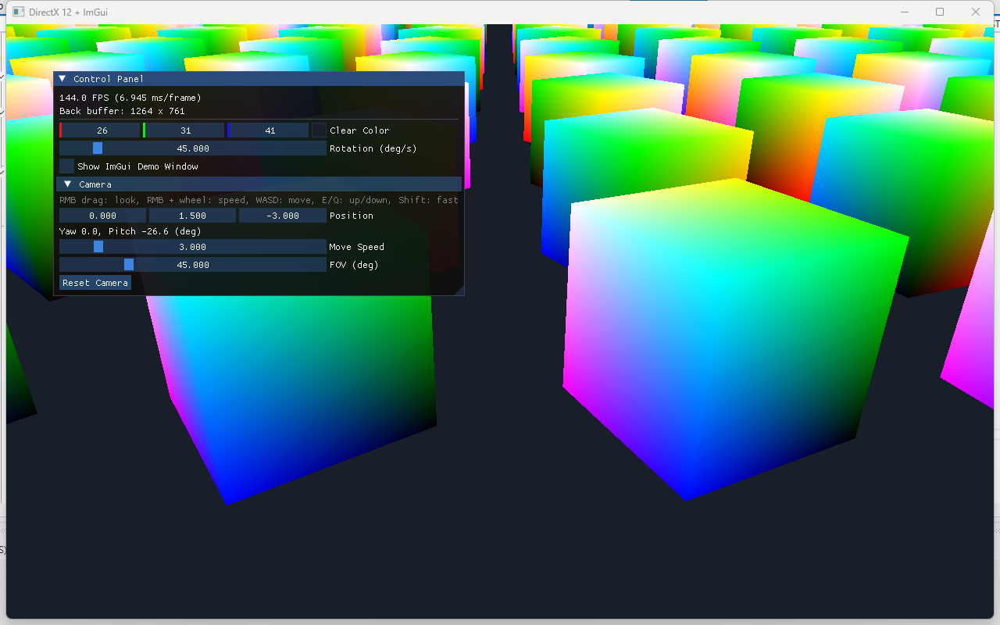

카메라부터 인스턴싱까지
카메라가 만든 뷰 행렬이 어떤 경로로 셰이더까지 가는지 따라가 봤다. 그다음 큐브 1개를 100개로 늘리면서 인스턴싱을 구현했고, 그 과정에서 나온 루트 인자, 힙, Map에 대한 질문들을 정리했다.
0한눈에 보기

DrawIndexedInstanced 한 번으로 그린 큐브 100개 (144 FPS)XMMatrixLookToLH가 Rᵀ와 -p를 직접 채워 만든다.kTransformParam은 칸 번호.SV_InstanceID로 자기 행렬을 찾게 했다.git diff에서 그대로 가져온 것이다. 경로 옆의 L시작–끝은 해당 파일의 줄 번호다.
1뷰 행렬 = 카메라 월드 변환의 역행렬
그러면 결국 상수 버퍼에 카메라의 이동, 회전을 역으로 취한 값이 행렬값에 들어가는 거지?
맞다. 카메라를 하나의 물체로 보면, 월드 변환은 "회전 R 다음에 위치 p로 이동"이다. 행 벡터 규약으로 쓰면 CameraWorld = R * T(p). 뷰 행렬은 이것의 역행렬이다.
View = (R * T(p))⁻¹ = T(-p) * Rᵀ- 먼저 -p만큼 이동한다. 카메라가 원점에 오도록 세상 전체를 반대로 옮기는 것이다.
- 다음에 회전을 반대로 적용한다. 회전 행렬은 직교 행렬이라 역행렬이 전치(Rᵀ)와 같다. 그래서 역행렬을 따로 계산하지 않아도 된다.
XMMatrixLookToLH는 역행렬을 직접 만든다
코드에서 Inverse()를 호출하지 않는다. LookToLH가 카메라 축 r(right), u(up), f(forward)와 위치 p로 처음부터 역행렬 모양을 만들어 준다.
r.x u.x f.x 0
r.y u.y f.y 0
r.z u.z f.z 0
-p·r -p·u -p·f 1- 위쪽 3×3: 축을 열로 세운 것 = Rᵀ. 월드 좌표를 카메라 축 방향 성분으로 바꾼다.
- 마지막 행: 위치를 빼는 이동(-p)을 카메라 축 기준으로 표현한 값.
r, u, f는 yaw/pitch로 계산한 Forward()와 월드 up에서 나오고, p는 m_position이다. WASD를 누르면 p가 바뀌어 마지막 행이 바뀌고, 마우스를 드래그하면 f가 바뀌어 3×3 부분이 바뀐다.
cbuffer ... : register(b0)로 읽으니 cbuffer처럼 보이지만, 버퍼 메모리를 따로 만들지 않고 커맨드 리스트에 값을 직접 넣는다. 그리고 셰이더로 넘어가는 건 뷰 행렬 단독이 아니라 다른 행렬과 곱해진 결과다(처음엔 MVP, 인스턴싱 후엔 viewProj).
2카메라 행렬이 셰이더까지 가는 길
그 부분이 지금 어디 있지? 카메라 행렬 적용하는 거
카메라 작업 당시(인스턴싱 전)의 경로는 다음과 같았다.
- 뷰 행렬 생성:
Camera::ViewMatrix()가XMMatrixLookToLH(m_position, Forward(), up)로 역변환 행렬을 만든다.ProjectionMatrix()는 투영 행렬. - MVP로 합치기:
main.cpp의ComputeCubeMvp()가world * view * proj를 하나로 곱하고, 전치하지 않고XMFLOAT4X4에 저장한다. - 매 프레임 호출:
camera.Update(deltaTime)다음에ComputeCubeMvp(...). - GPU로 전달:
SetGraphicsRoot32BitConstants(RootSignature::kTransformParam, 16, &mvp, 0). - 셰이더에서 적용:
mul(float4(input.Position, 1.0f), g_mvp). 정점에 실제로 카메라 행렬이 곱해지는 곳.
static XMFLOAT4X4 ComputeCubeMvp(float angleRadians, const Camera& camera, float aspectRatio)
{
XMMATRIX world = XMMatrixRotationY(angleRadians);
XMMATRIX view = camera.ViewMatrix();
XMMATRIX proj = camera.ProjectionMatrix(aspectRatio);
XMMATRIX mvp = world * view * proj; // 행 벡터 규약: v * World * View * Proj
XMFLOAT4X4 result;
XMStoreFloat4x4(&result, mvp); // 전치 안 함 (셰이더가 row_major)
return result;
}
...
commandList->SetGraphicsRoot32BitConstants(RootSignature::kTransformParam, 16, &mvp, 0);인스턴싱 이후에는 2번이 ComputeViewProj() + BuildInstances()로 나뉘었다(8장).
3커맨드 리스트와 루트 인자
3-1. SetGraphicsRoot32BitConstants는 영원히 고정 아닌가?
커맨드 리스트의 SetGraphicsRoot32BitConstants(kTransformParam, 16, &mvp, 0) 이 부분은 영원히 고정 아냐?
호출하는 코드 줄은 같지만, 넘기는 값은 매 프레임 바뀐다. 이유는 두 가지다.
① 커맨드 리스트는 매 프레임 새로 기록한다. 한 번 만들어 두고 재사용하는 녹화본이 아니다.
gfx.BeginFrame() → 커맨드 리스트 Reset (이전 기록 지움)
... SetGraphicsRoot32BitConstants(..., &mvp, ...) ← 이번 프레임 mvp로 다시 기록
... DrawIndexedInstanced(...)
gfx.EndFrame() → Close → ExecuteCommandLists → Present② 루트 상수는 호출하는 순간 값이 복사된다. &mvp라는 포인터를 넘기지만 GPU가 나중에 그 주소를 읽으러 오는 게 아니다. 호출 시점에 64바이트가 커맨드 리스트 안으로 복사된다. 그래서 mvp가 지역 변수여도 되고, 같은 프레임 안에서 값을 바꿔 가며 여러 번 호출해도 된다.
SetGraphicsRoot32BitConstants(..., &mvpA, 0); DrawIndexedInstanced(...); // 큐브 A
SetGraphicsRoot32BitConstants(..., &mvpB, 0); DrawIndexedInstanced(...); // 큐브 B각 Draw는 그 직전에 설정된 값을 쓴다.
3-2. kTransformParam은 바인딩 정보를 담고 있나?
RootSignature::kTransformParam은 루트 시그니처에서 셰이더의 몇 번에 바인딩할지의 정보를 가져오는 건가?
거의 맞지만, kTransformParam은 정보를 담고 있는 값이 아니라 정보가 있는 칸의 번호다.
kTransformParam (= 루트 파라미터 배열의 인덱스, 0)
│
▼
루트 시그니처의 파라미터[0] 정의 ← 루트 시그니처를 만들 때 정해 둠
- 타입: 32비트 상수
- 개수: 16
- 레지스터: b0, space 0
- 보이는 단계: VS
│
▼
셰이더의 cbuffer Transform : register(b0)"셰이더의 b0와 연결된다"는 정보는 파라미터 정의(ShaderRegister, RegisterSpace, Num32BitValues) 안에 있다. 호출 SetGraphicsRoot32BitConstants(n, 16, &mvp, 0)은 "현재 루트 시그니처의 n번 칸에 값 16개를, 그 칸의 0번째 값부터 채워라"라는 뜻이다.
3-3. 값은 루트 시그니처가 아니라 커맨드 리스트의 슬롯에 들어간다
이미 SetGraphicsRootSignature로 정해 둔 루트 시그니처에 16개의 mvp 값을 적으라는 명령이야?
맞다. 표현을 다듬으면, 루트 시그니처 자체에는 값이 없고 칸의 배치도일 뿐이다.
SetGraphicsRootSignature(...): 이 배치도를 쓴다고 정한다. 커맨드 리스트에 그 배치대로 빈 칸(루트 인자 슬롯)이 생긴다.SetGraphicsRoot32BitConstants(...): 그중 한 칸에 값을 적는다. 다시 호출하면 덮어쓴다.DrawIndexedInstanced(...): 그 순간 칸에 들어 있는 값으로 그린다.
SetGraphicsRootSignature를 호출하면 기존 칸의 값이 모두 무효가 된다. 항상 루트 시그니처 설정이 먼저, 값 설정이 그다음이다.
3-4. 커맨드 리스트 하나에 루트 시그니처는 하나뿐?
한 시점에는 그래픽스용 1개 + 컴퓨트용 1개가 바인딩된다(SetGraphicsRootSignature / SetComputeRootSignature는 서로 독립). 하지만 기록 중간에 여러 번 바꿀 수 있다.
commandList->SetGraphicsRootSignature(rootSigA);
commandList->SetPipelineState(psoA); // A와 호환되는 PSO
commandList->SetGraphicsRoot32BitConstants(0, 16, &mvp, 0);
commandList->DrawIndexedInstanced(...); // A 배치로 그림
commandList->SetGraphicsRootSignature(rootSigB); // 교체 → 이전 칸 값 전부 무효
commandList->SetPipelineState(psoB); // B와 호환되는 PSO
commandList->SetGraphicsRootDescriptorTable(...); // B 배치에 맞춰 다시 채움
commandList->DrawIndexedInstanced(...); // B 배치로 그림규칙은 두 가지다. ① 교체하면 루트 인자를 다시 채워야 한다. ② Draw 시점의 PSO가 현재 루트 시그니처와 호환되어야 한다. 교체에도 비용이 들어서, 엔진은 공용 루트 시그니처 몇 개만 두고 같은 것을 쓰는 Draw끼리 모아서 그린다. 실제로 ImGui 백엔드도 그릴 때 자기 루트 시그니처로 바꾼다.
3-5. Draw 정렬 (sort key)
Draw마다 64비트 키를 만들어 정렬하는 방식을 많이 쓴다. 비용이 큰 상태를 상위 비트에 둔다.
[ 패스/레이어 | 불투명·반투명 | 루트 시그니처 | PSO | 머티리얼 | 깊이 ]
상위 비트 ─────────────────────────────────────────▶ 하위 비트- 불투명: 상태 기준으로 묶고, 가능하면 앞에서 뒤로. 가까운 물체가 깊이를 먼저 채우면 가려진 픽셀이 Early-Z로 걸러진다.
- 반투명: 상태와 상관없이 뒤에서 앞으로. 블렌딩은 순서에 따라 결과가 달라진다.
- 실제로 자주 바뀌는 건 PSO와 머티리얼이다. 최근 엔진은 바인드리스(거대한 디스크립터 힙 + 인덱스)로 머티리얼 교체 비용을 거의 없앤다.
4루트 상수 · 루트 디스크립터 · 디스크립터 테이블
루트 상수랑 상수 버퍼가 뭔 차이임? 그리고 상수 버퍼는 디스크립터 없지 않아?
셋 다 셰이더에서는 똑같이 register(bN) 등으로 읽는다. 차이는 데이터가 어디 있고 무엇을 넘기느냐다. 상수 버퍼를 바인딩하는 방법이 두 가지(루트 디스크립터, 디스크립터 테이블)라서 셋으로 나눠 보면 정확하다.
| 방식 | 루트 시그니처에 들어가는 것 | 디스크립터 힙 | 비용 | 설정 함수 |
|---|---|---|---|---|
| 루트 상수 | 값 자체 | X | 값 1개당 1 DWORD | SetGraphicsRoot32BitConstants |
| 루트 디스크립터 (CBV/SRV/UAV) | 버퍼 GPU 주소 | X | 2 DWORD | SetGraphicsRootConstantBufferView 등 |
| 디스크립터 테이블 | 힙 안의 디스크립터 위치 | O | 1 DWORD | SetGraphicsRootDescriptorTable |
아래로 갈수록 한 단계씩 더 거쳐서 읽는다(간접 참조 증가). 대신 더 많은 데이터를 묶어 다룰 수 있다. 루트 시그니처 전체 크기는 64 DWORD로 제한된다. 지금 MVP 루트 상수는 16 DWORD라서 한도의 1/4을 쓴다.
루트 상수 vs 상수 버퍼
| 루트 상수 | 상수 버퍼 (CBV) | |
|---|---|---|
| 데이터 위치 | 커맨드 리스트에 직접 기록 | 별도 GPU 리소스(업로드 힙 등) |
| 넘기는 것 | 값 (호출 시점 복사) | GPU 주소 또는 디스크립터 |
| 크기 | 아주 작음 (루트 시그니처 전체 256B) | 최대 64KB, 256바이트 정렬 |
| 메모리 관리 | 필요 없음 | 버퍼 생성, Map, 쓰기 |
| 동기화 | 필요 없음 | GPU가 읽는 동안 덮어쓰면 안 됨 → 프레임별 버퍼 + 펜스 |
| 접근 속도 | 가장 빠름 | 메모리를 한 번 거침 |
| 주 용도 | 오브젝트마다 바뀌는 작은 값 (MVP, 오브젝트 인덱스) | 크거나 공유되는 데이터 (프레임 상수, 조명, 머티리얼) |
루트 디스크립터 예시 (힙 불필요)
// 루트 시그니처: D3D12_ROOT_PARAMETER_TYPE_CBV
commandList->SetGraphicsRootConstantBufferView(paramIndex, buffer->GetGPUVirtualAddress());디스크립터 테이블 예시 (CBV 디스크립터 필요)
// CBV_SRV_UAV 타입 디스크립터 힙에 CBV를 만듦
D3D12_CONSTANT_BUFFER_VIEW_DESC desc = { buffer->GetGPUVirtualAddress(), 256 };
device->CreateConstantBufferView(&desc, cpuHandle);
// 루트 시그니처: D3D12_ROOT_PARAMETER_TYPE_DESCRIPTOR_TABLE
commandList->SetDescriptorHeaps(...);
commandList->SetGraphicsRootDescriptorTable(paramIndex, gpuHandle);5그릴 것이 많아질 때
지금은 큐브 하나라 ComputeCubeMvp 하나로 퉁쳐지는데, 렌더링할 요소가 많아지면 이 구조보다 더 많아져야 하는 거 아냐?
맞다. 핵심은 얼마나 자주 바뀌는 값인지에 따라 분리하는 것이다.
view * proj: 카메라로 정해진다. 프레임당 한 번 계산하고 모든 오브젝트가 공유한다.world: 오브젝트마다 다르다.
// 프레임당 한 번
XMMATRIX viewProj = camera.ViewMatrix() * camera.ProjectionMatrix(aspect);
// 오브젝트마다
for (const RenderItem& item : renderItems)
{
XMMATRIX mvp = item.World() * viewProj;
// mvp를 셰이더로 넘기고, item.mesh 바인딩 후 Draw
}셰이더로 넘기는 방식도 단계적으로 바뀐다
| 단계 | 구조 | 적합한 규모 |
|---|---|---|
| 1 | 지금 방식 그대로 for문: 루트 상수 설정 → Draw | 수십 개 |
| 2 | 프레임 상수 버퍼(viewProj, 카메라 위치, 시간) + 오브젝트 루트 상수(world) | 조명 도입 시 (월드 좌표가 필요) |
| 3 | 오브젝트 상수 버퍼 배열 / 인스턴싱(StructuredBuffer + SV_InstanceID) | 수백~수천 개 |
메시가 다르면?
같은 메시가 아니라면 for문 돌려서 world 행렬 바꿔 가면서 DrawIndexedInstanced로 제출한다는 거지?
기본은 그렇다. 다만 메시가 다르면 world만이 아니라 메시 바인딩도 바꿔야 한다.
SetGraphicsRootSignature(...);
SetPipelineState(...);
for (const RenderItem& item : renderItems)
{
SetGraphicsRoot32BitConstants(kTransformParam, 16, &item.mvp, 0); // 1. 오브젝트별 변환
IASetVertexBuffers(0, 1, &item.mesh->vbView); // 2. 메시별 버퍼
IASetIndexBuffer(&item.mesh->ibView);
DrawIndexedInstanced(item.mesh->indexCount, 1, 0, 0, 0); // 3. 그리기
}ExecuteIndirect를 쓰면 CPU 충돌 처리가 문제?
ExecuteIndirect를 쓰면 CPU 주도로 하는 플레이어 충돌은 처리하면 안 되는 거 아냐? GPU 시뮬레이션 결과를 리드백 받아야 하잖아.
아니다. ExecuteIndirect는 그리기 명령을 내는 방식일 뿐 시뮬레이션을 GPU로 옮기지 않는다.
[CPU] 입력 → 게임 로직 → 물리/충돌 → 최종 위치 확정
│
│ 위치·world 행렬을 업로드 (단방향)
▼
[GPU] 컬링 → Draw 인자 생성 → ExecuteIndirect로 그리기GPU가 계산한 "무엇이 보이는지"는 게임 로직에 필요 없으니 리드백할 필요가 없다. 리드백이 문제가 되는 건 게임 로직이 GPU 결과에 의존할 때(GPU 물리로 피격 판정 등)이고, 결과가 1~2프레임 늦게 온다. 그래서 판정에 영향을 주는 시뮬레이션은 CPU, 보이기만 하는 시뮬레이션(파티클, 천, 풀)은 GPU에서 하고 리드백하지 않는 식으로 나눈다.
6여러 개를 그리는 4가지 방법
| 상황 | 방식 | 이 프로젝트 |
|---|---|---|
| 같은 메시 여러 개 | 인스턴싱 (StructuredBuffer + SV_InstanceID), Draw 1번 | ← 이번에 구현 |
| 다른 메시 여러 개 | for문: 변환 설정 → (필요하면) VB/IB 바인딩 → Draw | |
| 다른 메시를 효율적으로 | 공용 VB/IB + StartIndexLocation / BaseVertexLocation | |
| 매우 많은 오브젝트 | ExecuteIndirect로 GPU가 Draw 실행 |
넷은 서로 배타적이지 않고 같이 쓰인다. 메시 종류별로 for문을 돌고(2), 각 메시는 인스턴싱으로 여러 개를 한 번에 그리고(1), VB/IB는 공용 버퍼에 모아 두는(3) 식이다. 더 나아가면 이 전체를 ExecuteIndirect로 GPU에 맡긴다(4).
7인스턴싱의 원리
인스턴싱 (StructuredBuffer + SV_InstanceID), Draw 1번. 이거는 어떤 원리로 되는 거야?
비유: 도장
- 메시 = 도장. 큐브 모양이 새겨진 도장 하나.
- World 행렬 = 찍을 위치 목록. "1번은 여기, 이 각도로. 2번은 저기, 저 각도로..." 100줄.
- 인스턴싱 = "목록대로 100번 찍어"라는 지시 한 번.
도장을 100개 만들 필요가 없고(메시 하나), "찍어"를 100번 말할 필요도 없다(Draw 한 번). 목록만 있으면 된다.
GPU가 실제로 하는 일 (의사 코드)
for 정점 in 큐브의 정점들:
VS(정점)for instanceId in 0 ~ 99: ← GPU가 알아서 반복
for 정점 in 큐브의 정점들:
VS(정점, instanceId) ← 몇 번째 반복인지 같이 알려 줌달라진 건 두 가지뿐이다. ① 두 번째 인자를 100으로 주면 GPU가 같은 정점들을 100번 반복 처리한다. ② 반복할 때마다 정점 셰이더에 SV_InstanceID(0~99)를 넘겨 준다. 이 값은 CPU가 아니라 입력 조립기(IA)가 채운다. (실제로는 순서대로가 아니라 병렬로 처리된다.)
셰이더가 번호로 자기 줄을 찾는다
instanceId를 무시하면 100개가 같은 자리에 겹쳐서 하나처럼 보인다. 그래서 셰이더가 번호로 목록에서 자기 행렬을 꺼낸다.
float4x4 world = g_instances[instanceId].World; // 목록의 instanceId번째 줄
worldPos = mul(정점, world); // 그 위치·각도로 옮김Draw 명령은 하나, 처리량은 그대로
드로우 콜 자체도 한 번만 들어가고 GPU가 100번 그리는 거잖아?
맞다. 정확히는 명령 하나가 "인덱스 36 × 인스턴스 100 = 정점 셰이더 3,600회"라는 작업량이 되고, GPU가 이를 한꺼번에 병렬로 처리한다.
| for문 Draw 100번 | 인스턴싱 Draw 1번 | |
|---|---|---|
| 커맨드 리스트 명령 | 루트 상수 + Draw × 100 | Draw 1개 |
| CPU 기록 비용 | 100배 | 1번 |
| Draw당 GPU 준비 비용 | 100번 | 1번 |
| 정점 셰이더 실행 횟수 | 3,600 | 3,600 (같음) |
| 픽셀 셰이더 비용 | 같음 | 같음 |
인스턴싱은 명령 수와 CPU 오버헤드를 줄이는 기법이다. GPU가 처리하는 정점·픽셀 양은 그대로라서, 그쪽이 병목이면 LOD나 컬링으로 그릴 양 자체를 줄여야 한다.
메시는 한 번, 인스턴스 데이터는 매 프레임
| 메시 버퍼 (VB/IB) | 인스턴스 버퍼 | |
|---|---|---|
| 위치 | Mesh::Init | InstanceBuffer |
| 내용 | 큐브 1개 (정점 8, 인덱스 36) | World 행렬 100개 (6.4KB) |
| 업로드 | 시작할 때 한 번 | 매 프레임 |
| 이번 변경 | 그대로 | 새로 추가 |
인스턴스 버퍼에는 World 말고도 개체마다 다른 값이면 무엇이든 넣을 수 있다(색, 머티리얼 인덱스, 애니메이션 시간 등). C++ 구조체와 HLSL 구조체를 같은 순서로 맞추면 된다.
D3D12_INPUT_CLASSIFICATION_PER_INSTANCE_DATA를 지정하는 옛날 방식도 있다. IA가 인스턴스마다 다음 데이터로 넘어간다. StructuredBuffer 쪽이 더 유연해서 요즘은 이쪽을 많이 쓴다.
SV_InstanceID는 StartInstanceLocation 인자와 상관없이 항상 0부터 시작한다. 버퍼 중간부터 읽게 하려면 오프셋을 루트 상수로 따로 넘겨서 더해야 한다.
8인스턴싱 구현: 무엇이 바뀌었나
그럼 지금 100개 메시 그리는데 StructuredBuffer로 처리해 봐. 그리고 이전 거랑 diff 따져서 뭐에서 뭐가 바뀌었는지 자세하게.
핵심은 CPU가 큐브 하나의 MVP를 완성해서 넘기던 방식에서 CPU는 재료만 넘기고 GPU가 인스턴스마다 조합하는 방식으로 바뀐 것이다.
전후 비교
| 전 | 후 | |
|---|---|---|
| 그리는 개수 | 1개 | 100개 |
| CPU 계산 | world * view * proj 완성본 1개 | view * proj 1개 + world 100개 |
| 셰이더로 넘기는 것 | 루트 상수: MVP | 루트 상수: viewProj + 루트 SRV: world 100개 버퍼 주소 |
| GPU 메모리 | 없음 (커맨드 리스트에 복사) | 인스턴스 버퍼 × 프레임 수(2) |
| Draw | DrawIndexedInstanced(36, 1, ...) | DrawIndexedInstanced(36, 100, ...) |
| 셰이더 행렬 곱 | pos × g_mvp | pos × g_instances[id].World × g_viewProj |
행렬을 나눈 이유: 루트 상수 칸에는 행렬 하나(16 DWORD)만 들어가므로 큐브 100개의 MVP를 다 넣을 수 없다. 그래서 공통 부분은 루트 상수로, 큐브마다 다른 부분은 버퍼로 보냈다.
메모리가 필요해진 이유: 루트 상수는 값이 복사되지만, 루트 SRV는 주소만 넘기고 GPU가 Draw를 실행할 때 그 주소를 읽는다. 그래서 실제 GPU 메모리가 있어야 하고, GPU가 읽는 도중에 CPU가 덮어쓰면 안 되므로 버퍼를 프레임마다 따로 두고 BeginFrame 이후에만 쓴다. 4장의 "루트 상수 vs 상수 버퍼" 차이가 코드에 그대로 나타난 것이다.
8-1. RootSignature.h: 슬롯 번호
0번 슬롯은 이름만 바꿨고(이제 MVP가 아니라 viewProj), 1번 슬롯을 새로 추가했다.
diff --git a/DirectX12/RootSignature.h b/DirectX12/RootSignature.h
index 3452c76..6a02158 100644
--- a/DirectX12/RootSignature.h
+++ b/DirectX12/RootSignature.h
@@ -3,12 +3,14 @@
#include "D3DUtil.h"
// 셰이더에 넘길 파라미터의 틀 (종류와 순서). 여러 PSO가 공유
-// - 파라미터 0: 32비트 상수 16개 = float4x4 (b0, VS 전용) → MVP 행렬용
+// - 파라미터 0: 32비트 상수 16개 = float4x4 (b0, VS 전용) → View * Projection 행렬 (프레임당 한 번)
+// - 파라미터 1: 루트 SRV (t0, VS 전용) → 인스턴스별 World 행렬이 담긴 StructuredBuffer의 GPU 주소
class RootSignature
{
public:
// SetGraphicsRoot…의 첫 인자로 쓰는 파라미터 번호
- static constexpr UINT kTransformParam = 0;
+ static constexpr UINT kViewProjParam = 0;
+ static constexpr UINT kInstanceParam = 1;
void Init(ID3D12Device* device);
void Shutdown();8-2. RootSignature.cpp: 파라미터 배열
파라미터 0은 이름 외에 설정이 같다(루트 상수 16개, b0, VS). 파라미터 1은 .Constants 대신 .Descriptor를 채운다. 이것이 "값을 넣는 칸"과 "주소를 넣는 칸"의 차이다.
diff --git a/DirectX12/RootSignature.cpp b/DirectX12/RootSignature.cpp
index 9ea8b23..f838a13 100644
--- a/DirectX12/RootSignature.cpp
+++ b/DirectX12/RootSignature.cpp
@@ -5,28 +5,36 @@
// SetGraphicsroot32Bitconstants로 넣는다
// 이 Rootsignature가 담고있는정보(2가지)는 다음과같다.
// 슬롯0번, b0레지스터에 32비트값16개(4x4)를 루트 상수로 넘기고 vs만 볼 수 있게 한다.
+// 슬롯1번, t0레지스터에 인스턴스 버퍼(StructuredBuffer)의 GPU 주소를 루트 SRV로 넘기고 vs만 볼 수 있게 한다.
// 플래그, IA 입력 레이아웃(버텍스버퍼로 정점받기)을 허용한다.
void RootSignature::Init(ID3D12Device* device)
{
// 1. 파라미터 0: 루트 상수. 힙이나 버퍼 없이 값 자체를 커맨드 리스트에 직접 기록
- D3D12_ROOT_PARAMETER params[1] = {};
+ D3D12_ROOT_PARAMETER params[2] = {};
// 이슬롯에 값자체를 넣겠다는 뜻. uav, srv, dsv와 다르게 디스크립터를 쓰지않고 값을 넣겠다는뜻
- params[kTransformParam].ParameterType = D3D12_ROOT_PARAMETER_TYPE_32BIT_CONSTANTS;
+ params[kViewProjParam].ParameterType = D3D12_ROOT_PARAMETER_TYPE_32BIT_CONSTANTS;
- // hlsl의 register(b0)과 연결됨
- params[kTransformParam].Constants.ShaderRegister = 0; // b0
- params[kTransformParam].Constants.RegisterSpace = 0;
+ // hlsl의 register(b0)과 연결됨
+ params[kViewProjParam].Constants.ShaderRegister = 0; // b0
+ params[kViewProjParam].Constants.RegisterSpace = 0;
// 32비트값 16개(float 16개를 사용한다는뜻 4x4)
- params[kTransformParam].Constants.Num32BitValues = 16; // float4x4 = 32비트 × 16
+ params[kViewProjParam].Constants.Num32BitValues = 16; // float4x4 = 32비트 × 16
- // 이 코드의 뜻은 이 파라미터(mvp행렬)을 어느 셰이더 단계에서 볼 수 있게 할지 정하는 설정
+ // 이 코드의 뜻은 이 파라미터(viewProj행렬)을 어느 셰이더 단계에서 볼 수 있게 할지 정하는 설정
// 지금의 설정은 버텍스 셰이더에서만 보이게한다.
// D3D12_SHADER_VISIBILITY_ALL, D3D12_SHADER_VISIBILITY_PIXEL 두가지가있는데
// 여기서는 vertex만씀 이렇게 좁히면 필요한 단꼐에만 데이터를 전달하니까 드라이버가 최적화할 여지가 생김
- params[kTransformParam].ShaderVisibility = D3D12_SHADER_VISIBILITY_VERTEX;
+ params[kViewProjParam].ShaderVisibility = D3D12_SHADER_VISIBILITY_VERTEX;
+
+ // 1-2. 파라미터 1: 루트 SRV. 버퍼의 GPU 주소(64비트 = 2 DWORD)를 직접 넣음
+ // 디스크립터 힙 / CreateShaderResourceView 없이 바인딩 가능 (텍스처는 불가, 버퍼만 가능)
+ params[kInstanceParam].ParameterType = D3D12_ROOT_PARAMETER_TYPE_SRV;
+ params[kInstanceParam].Descriptor.ShaderRegister = 0; // t0
+ params[kInstanceParam].Descriptor.RegisterSpace = 0;
+ params[kInstanceParam].ShaderVisibility = D3D12_SHADER_VISIBILITY_VERTEX;
// 2. 루트 시그니처 설명. 버텍스 버퍼(입력 레이아웃)를 쓰려면 플래그 필수
D3D12_ROOT_SIGNATURE_DESC desc = {};8-3. Shaders/BasicVS.hlsl
- b0는 그대로, cbuffer와 변수 이름만 바꿨다(
g_mvp→g_viewProj). - 구조체 안에도
row_major를 붙였다. StructuredBuffer 안의 행렬도 기본이 열 우선이라서, C++에서 전치하지 않으려면 필요하다. VSInput/Common.hlsli는 그대로.SV_InstanceID는 정점 버퍼에서 오는 값이 아니라서 함수 인자로 받았다.
diff --git a/DirectX12/Shaders/BasicVS.hlsl b/DirectX12/Shaders/BasicVS.hlsl
index b39edf9..7ebf074 100644
--- a/DirectX12/Shaders/BasicVS.hlsl
+++ b/DirectX12/Shaders/BasicVS.hlsl
@@ -1,17 +1,28 @@
#include "Common.hlsli"
-// 루트 시그니처 파라미터 0 (32비트 상수 16개 = float4x4)
+// 루트 시그니처 파라미터 0 (32비트 상수 16개 = float4x4). 프레임당 한 번, 모든 인스턴스가 공유
// C++(DirectXMath)은 행 우선, HLSL cbuffer 기본은 열 우선이라 row_major로 받음 (C++에서 전치 안 함)
-cbuffer Transform : register(b0)
+cbuffer Frame : register(b0)
{
- row_major float4x4 g_mvp; // 로컬 → 월드 → 뷰 → 클립 공간
+ row_major float4x4 g_viewProj; // 월드 → 뷰 → 클립 공간
};
-// 로컬 좌표 정점을 MVP로 클립 공간 좌표로 변환
-VSOutput VSMain(VSInput input)
+// 루트 시그니처 파라미터 1 (루트 SRV). 인스턴스마다 하나씩
+// C++ InstanceData(InstanceBuffer.h)와 크기 / 순서가 같아야 함
+struct InstanceData
+{
+ row_major float4x4 World; // 로컬 → 월드
+};
+StructuredBuffer<InstanceData> g_instances : register(t0);
+
+// instanceId: DrawIndexedInstanced가 같은 메시를 반복할 때 몇 번째 반복인지 (0 ~ instanceCount-1)
+// 입력 조립기가 자동으로 채워 줌
+VSOutput VSMain(VSInput input, uint instanceId : SV_InstanceID)
{
VSOutput output;
- output.Position = mul(float4(input.Position, 1.0f), g_mvp); // 행 벡터 × 행렬 (DirectXMath와 같은 순서)
+ float4x4 world = g_instances[instanceId].World; // 내 번호의 World 행렬
+ float4 worldPosition = mul(float4(input.Position, 1.0f), world); // 로컬 → 월드
+ output.Position = mul(worldPosition, g_viewProj); // 월드 → 클립 (행 벡터 × 행렬)
output.Color = input.Color;
return output;
}8-4. InstanceBuffer.h / .cpp (새 파일)
InstanceData { XMFLOAT4X4 World; }: 셰이더의InstanceData와 1:1.static_assert로 64바이트 검사.Init: UPLOAD 힙 버퍼를 프레임 수만큼 만들고, Map한 포인터를m_mapped[i]에 보관(Unmap하지 않음).Upload:m_mapped[frameIndex]에memcpy하고 그 버퍼의 GPU 주소를 반환.Shutdown: Unmap 후 Reset.
DirectX12/InstanceBuffer.h (37줄)
#pragma once
#include "D3DUtil.h"
#include <DirectXMath.h>
// 인스턴스 하나의 데이터. BasicVS.hlsl의 InstanceData와 반드시 일치해야 함
// (StructuredBuffer는 C++ 구조체를 그대로 배열로 읽으므로 크기 / 순서가 같아야 함)
struct InstanceData
{
DirectX::XMFLOAT4X4 World; // 로컬 → 월드 (전치하지 않음. 셰이더에서 row_major로 받음)
};
static_assert(sizeof(InstanceData) == 64, "InstanceData 크기가 셰이더와 다름");
// 인스턴스 데이터를 담는 StructuredBuffer (UPLOAD 힙, 계속 Map해 둠)
// - CPU가 매 프레임 새로 쓰므로 프레임 수(kNumFramesInFlight)만큼 따로 둠
// GPU가 이전 프레임 버퍼를 읽는 중에 CPU가 덮어쓰지 않게 하기 위함
// - 루트 SRV(t0)로 바인딩하므로 디스크립터 힙이 필요 없음
class InstanceBuffer
{
public:
static constexpr UINT kMaxFrames = 3;
// maxInstances: 한 프레임에 쓸 수 있는 최대 인스턴스 수
void Init(ID3D12Device* device, UINT numFrames, UINT maxInstances);
void Shutdown();
// frameIndex번 버퍼에 인스턴스 데이터를 복사하고, 그 버퍼의 GPU 주소를 반환
// GPU가 그 버퍼를 다 쓴 뒤(= GraphicsDevice::BeginFrame 이후)에 호출해야 함
D3D12_GPU_VIRTUAL_ADDRESS Upload(UINT frameIndex, const InstanceData* data, UINT count);
private:
ComPtr<ID3D12Resource> m_buffers[kMaxFrames];
InstanceData* m_mapped[kMaxFrames] = {}; // Map해 둔 CPU 포인터
UINT m_numFrames = 0;
UINT m_maxInstances = 0;
};DirectX12/InstanceBuffer.cpp (77줄)
#include "InstanceBuffer.h"
#include <cstring>
void InstanceBuffer::Init(ID3D12Device* device, UINT numFrames, UINT maxInstances)
{
if (numFrames > kMaxFrames)
throw std::runtime_error("InstanceBuffer: numFrames > kMaxFrames");
m_numFrames = numFrames;
m_maxInstances = maxInstances;
// 1. 힙 속성: CPU가 매 프레임 쓰므로 UPLOAD 힙
D3D12_HEAP_PROPERTIES heapProps = {};
heapProps.Type = D3D12_HEAP_TYPE_UPLOAD;
// 2. 리소스 설명: InstanceData × maxInstances 바이트짜리 버퍼
D3D12_RESOURCE_DESC desc = {};
desc.Dimension = D3D12_RESOURCE_DIMENSION_BUFFER;
desc.Width = static_cast<UINT64>(sizeof(InstanceData)) * maxInstances;
desc.Height = 1;
desc.DepthOrArraySize = 1;
desc.MipLevels = 1;
desc.Format = DXGI_FORMAT_UNKNOWN;
desc.SampleDesc.Count = 1;
desc.Layout = D3D12_TEXTURE_LAYOUT_ROW_MAJOR;
desc.Flags = D3D12_RESOURCE_FLAG_NONE;
// 현재 백 버퍼 수 만큼 만든다. gpu가 이전 프레임 버퍼를 읽는 동안 cpu가 다음 프레임 데이터를 쓰려면 버퍼가 따로 있어야함
// m_buffers[0], m_mapped[0] ← 짝수 프레임용
// m_buffers[1], m_mapped[1] ← 홀수 프레임용
for (UINT i = 0; i < numFrames; ++i)
{
// 3. 생성: UPLOAD 힙은 GENERIC_READ (셰이더 리소스로 읽기 포함)
// Committed Resource: 메모리(힙)와 리소스를 한 번에 만든다는 뜻. 힙을 따로 만들어 그 안에 리소스를 배치하는 방식(Placed Resource)도 있는데, Committed가 가장 간단
ThrowIfFailed(device->CreateCommittedResource(
&heapProps, // 어느 메모리에: UPLOAD 힙 (반복문 위에서 설정)
D3D12_HEAP_FLAG_NONE, // 힙 추가 옵션: 없음
&desc, // 어떤 리소스: 6400바이트짜리 버퍼 (위에서 설정)
D3D12_RESOURCE_STATE_GENERIC_READ, // UPLOAD 힙 리소스는 반드시 이 상태로 만들어야 하고, 다른 상태로 바꿀 수도 없음 GPU가 읽을 수 있는 여러 상태(정점 버퍼, 상수 버퍼, 셰이더 리소스, 복사 원본 등)를 모두 합친 상태
nullptr,
IID_PPV_ARGS(&m_buffers[i])), // 결과를 받을 곳
"CreateCommittedResource(Instance)");
// 4. Map해 두고 Unmap하지 않음 (UPLOAD 힙은 Map한 채로 GPU가 읽어도 됨)
// 매 프레임 Map / Unmap 하는 비용을 아낌
D3D12_RANGE readRange = { 0, 0 }; // CPU는 읽지 않음
void* mapped = nullptr;
ThrowIfFailed(m_buffers[i]->Map(0, &readRange, &mapped), "Map(Instance)");
m_mapped[i] = static_cast<InstanceData*>(mapped);
// Unmap하지 않는 이유 (Mesh와의 차이)
// UPLOAD 힙은 Map한 상태로 두어도 GPU가 읽을 수 있음(persistent mapping). 그래서 Init에서 한 번 Map한 포인터를 m_mapped[i]에 계속 들고 있다가, 매 프레임 Upload()에서 그 포인터에 memcpy
// Unmap은 Shutdown()에서 버퍼를 해제하기 직전에 한 번
}
}
void InstanceBuffer::Shutdown()
{
for (UINT i = 0; i < m_numFrames; ++i)
{
if (m_buffers[i])
m_buffers[i]->Unmap(0, nullptr);
m_buffers[i].Reset();
m_mapped[i] = nullptr;
}
m_numFrames = 0;
}
D3D12_GPU_VIRTUAL_ADDRESS InstanceBuffer::Upload(UINT frameIndex, const InstanceData* data, UINT count)
{
if (count > m_maxInstances)
throw std::runtime_error("InstanceBuffer: count > maxInstances");
memcpy(m_mapped[frameIndex], data, sizeof(InstanceData) * count);
return m_buffers[frameIndex]->GetGPUVirtualAddress();
}Init의 반복문이 하는 일
| 인자 / 줄 | 의미 |
|---|---|
CreateCommittedResource | 메모리(힙)와 리소스를 한 번에 만든다. 힙을 따로 만들어 배치하는 Placed Resource도 있지만 Committed가 가장 간단하다. |
D3D12_RESOURCE_STATE_GENERIC_READ | UPLOAD 힙 리소스는 반드시 이 상태로 만들고 바꿀 수 없다. GPU 읽기 상태(정점 버퍼, 상수 버퍼, 셰이더 리소스, 복사 원본...)를 모두 합친 상태라 배리어 없이 바로 SRV로 읽을 수 있다. |
nullptr (클리어 값) | 렌더 타깃·깊이 버퍼처럼 Clear하는 리소스에만 쓴다. 버퍼는 없음. |
readRange = {0, 0} | CPU는 이 메모리를 읽지 않겠다고 드라이버에 알린다. |
static_cast<InstanceData*> | void*를 배열처럼 쓸 수 있게 바꿔 둔다. |
8-5. GraphicsDevice.h: getter 하나
WaitForNextFrameContext가 쓰는 번호와 같은 값이다. 그래서 BeginFrame이 기다려 준 프레임 컨텍스트와 같은 번호의 인스턴스 버퍼를 고를 수 있다.
diff --git a/DirectX12/GraphicsDevice.h b/DirectX12/GraphicsDevice.h
index 2d1a847..3ba2066 100644
--- a/DirectX12/GraphicsDevice.h
+++ b/DirectX12/GraphicsDevice.h
@@ -36,6 +36,9 @@ public:
ID3D12GraphicsCommandList* CommandList() const { return m_commandList.Get(); }
UINT Width() const { return m_width; }
UINT Height() const { return m_height; }
+ // 이번 프레임의 프레임 컨텍스트 번호 (0 ~ kNumFramesInFlight-1). BeginFrame ~ EndFrame 사이에서만 유효
+ // 프레임마다 따로 두는 리소스(인스턴스 버퍼 등)를 고를 때 사용
+ UINT FrameIndex() const { return m_frameIndex % kNumFramesInFlight; }
D3D12_CPU_DESCRIPTOR_HANDLE CurrentBackBufferRtv() const { return m_backBufferRtv[m_currentBackBuffer]; }
D3D12_CPU_DESCRIPTOR_HANDLE DepthBufferDsv() const { return m_depthBufferDsv; }
8-6. main.cpp
ComputeCubeMvp삭제 →ComputeViewProj(프레임당 한 번) +BuildInstances(큐브 100개 World) 추가.- 계산(
BuildInstances)은BeginFrame전, GPU 버퍼에 쓰기(Upload)는BeginFrame후. 계산은 CPU 배열이라 언제 해도 되지만, 버퍼는 GPU가 다 쓴 뒤에 덮어써야 한다. - 루트 시그니처, PSO, VB/IB 바인딩, 토폴로지는 그대로.
diff --git a/DirectX12/main.cpp b/DirectX12/main.cpp
index 5876bb5..29894c5 100644
--- a/DirectX12/main.cpp
+++ b/DirectX12/main.cpp
@@ -11,6 +11,7 @@
#include "RootSignature.h"
#include "BasicPipeline.h"
#include "Camera.h"
+#include "InstanceBuffer.h"
using namespace DirectX;
@@ -23,26 +24,46 @@ static UINT g_resizeHeight = 0;
// ---------------------------------------------------------------------------
// 렌더링
// ---------------------------------------------------------------------------
-// 큐브의 MVP 행렬 (전치하지 않음. 셰이더의 g_mvp가 row_major라 그대로 읽음)
-// 왼손 좌표계, Y-up, +Z 앞쪽
-static XMFLOAT4X4 ComputeCubeMvp(float angleRadians, const Camera& camera, float aspectRatio)
-{
- // Model(World): 로컬 → 월드. Y축으로 회전
- XMMATRIX world = XMMatrixRotationY(angleRadians);
+// 왼손 좌표계, Y-up, +Z 앞쪽. 행렬은 전치하지 않음 (셰이더에서 row_major로 받음)
+
+// 큐브 격자: kGridSize × kGridSize개를 XZ 평면에 kGridSpacing 간격으로 배치
+static constexpr UINT kGridSize = 10;
+static constexpr UINT kNumInstances = kGridSize * kGridSize;
+static constexpr float kGridSpacing = 2.0f;
+// View * Projection (프레임당 한 번, 모든 인스턴스가 공유)
+static XMFLOAT4X4 ComputeViewProj(const Camera& camera, float aspectRatio)
+{
// View: 월드 → 카메라. Projection: 카메라 → 클립 공간
XMMATRIX view = camera.ViewMatrix();
XMMATRIX proj = camera.ProjectionMatrix(aspectRatio);
- // 행 벡터 규약: v * World * View * Proj
- XMMATRIX mvp = world * view * proj;
-
XMFLOAT4X4 result;
- //XMStoreFloat4x4(&result, XMMatrixTranspose(mvp));
- XMStoreFloat4x4(&result, mvp);
+ XMStoreFloat4x4(&result, view * proj);
return result;
}
+// 인스턴스마다 World 행렬 계산. x는 가운데 정렬, z는 원점에서 앞쪽(+Z)으로 늘어놓음
+// 큐브마다 회전 위상을 조금씩 다르게 해서 각자 다른 각도로 돌게 함
+static void BuildInstances(float angleRadians, InstanceData* out)
+{
+ const float halfWidth = (kGridSize - 1) * kGridSpacing * 0.5f;
+
+ for (UINT z = 0; z < kGridSize; ++z)
+ {
+ for (UINT x = 0; x < kGridSize; ++x)
+ {
+ const UINT index = z * kGridSize + x;
+ const float phase = static_cast<float>(index) * 0.15f;
+
+ // 행 벡터 규약: v * Rotation * Translation (제자리에서 돌고 → 격자 위치로 이동)
+ XMMATRIX world = XMMatrixRotationY(angleRadians + phase)
+ * XMMatrixTranslation(x * kGridSpacing - halfWidth, 0.0f, z * kGridSpacing);
+ XMStoreFloat4x4(&out[index].World, world);
+ }
+ }
+}
+
// ---------------------------------------------------------------------------
// Win32
// ---------------------------------------------------------------------------
@@ -113,14 +134,17 @@ int WINAPI wWinMain(HINSTANCE hInstance, HINSTANCE, PWSTR, int)
RootSignature rootSignature;
BasicPipeline basicPipeline;
Camera camera;
+ InstanceBuffer instanceBuffer;
float cubeAngle = 0.0f; // 라디안
+ InstanceData instances[kNumInstances];
int exitCode = 0;
try
{
gfx.Init(hwnd);
cube.Init(gfx.Device());
+ instanceBuffer.Init(gfx.Device(), GraphicsDevice::kNumFramesInFlight, kNumInstances);
rootSignature.Init(gfx.Device());
// 이 부분은 PSO(Pipeline State Object)를 만드는 호출
@@ -149,22 +173,30 @@ int WINAPI wWinMain(HINSTANCE hInstance, HINSTANCE, PWSTR, int)
imgui.BeginFrame();
controlPanel.Draw(gfx.Width(), gfx.Height(), camera);
- // 업데이트: 카메라 이동 / 회전, 큐브 회전 각도 누적 → MVP 계산
+ // 업데이트: 카메라 이동 / 회전, 큐브 회전 각도 누적 → ViewProj / 인스턴스 World 계산
const float deltaTime = ImGui::GetIO().DeltaTime;
camera.Update(deltaTime);
cubeAngle += XMConvertToRadians(controlPanel.RotationSpeed()) * deltaTime;
const float aspectRatio = static_cast<float>(gfx.Width()) / static_cast<float>(gfx.Height());
- const XMFLOAT4X4 mvp = ComputeCubeMvp(cubeAngle, camera, aspectRatio);
+ const XMFLOAT4X4 viewProj = ComputeViewProj(camera, aspectRatio);
+ BuildInstances(cubeAngle, instances);
ID3D12GraphicsCommandList* commandList = gfx.BeginFrame(controlPanel.ClearColor());
+
+ // 인스턴스 데이터 업로드. BeginFrame이 이 프레임 번호의 GPU 작업이 끝나길 기다렸으므로
+ // 이제 이 프레임 번호의 버퍼를 덮어써도 안전함
+ const D3D12_GPU_VIRTUAL_ADDRESS instanceAddress = instanceBuffer.Upload(gfx.FrameIndex(), instances, kNumInstances);
+
// 큐브 드로우: 틀(루트 시그니처) → 처리 방법(PSO) → 데이터(버퍼) → 그리기
commandList->SetGraphicsRootSignature(rootSignature.Get());
commandList->SetPipelineState(basicPipeline.Get());
- commandList->SetGraphicsRoot32BitConstants(RootSignature::kTransformParam, 16, &mvp, 0);
+ commandList->SetGraphicsRoot32BitConstants(RootSignature::kViewProjParam, 16, &viewProj, 0);
+ commandList->SetGraphicsRootShaderResourceView(RootSignature::kInstanceParam, instanceAddress);
commandList->IASetPrimitiveTopology(D3D_PRIMITIVE_TOPOLOGY_TRIANGLELIST);
commandList->IASetVertexBuffers(0, 1, &cube.VertexBufferView());
commandList->IASetIndexBuffer(&cube.IndexBufferView());
- commandList->DrawIndexedInstanced(cube.IndexCount(), 1, 0, 0, 0);
+ // 같은 큐브 메시를 kNumInstances번 반복. 반복마다 VS의 SV_InstanceID가 0, 1, 2, ...
+ commandList->DrawIndexedInstanced(cube.IndexCount(), kNumInstances, 0, 0, 0);
imgui.Render(commandList);
gfx.EndFrame();
@@ -181,6 +213,7 @@ int WINAPI wWinMain(HINSTANCE hInstance, HINSTANCE, PWSTR, int)
// 직접 만든 파이프라인 리소스 해제 (GPU 대기 후, gfx.Shutdown 이전에)
basicPipeline.Shutdown();
rootSignature.Shutdown();
+ instanceBuffer.Shutdown();
cube.Shutdown();
gfx.Shutdown();
DestroyAppWindow(hwnd, hInstance);8-7. 프로젝트 파일
diff --git a/DirectX12/DirectX12.vcxproj b/DirectX12/DirectX12.vcxproj
index 3a96d80..52a3fa6 100644
--- a/DirectX12/DirectX12.vcxproj
+++ b/DirectX12/DirectX12.vcxproj
@@ -102,6 +102,7 @@
<ClCompile Include="RootSignature.cpp" />
<ClCompile Include="BasicPipeline.cpp" />
<ClCompile Include="Camera.cpp" />
+ <ClCompile Include="InstanceBuffer.cpp" />
<ClCompile Include="imgui\imgui.cpp" />
<ClCompile Include="imgui\imgui_demo.cpp" />
<ClCompile Include="imgui\imgui_draw.cpp" />
@@ -119,6 +120,7 @@
<ClInclude Include="RootSignature.h" />
<ClInclude Include="BasicPipeline.h" />
<ClInclude Include="Camera.h" />
+ <ClInclude Include="InstanceBuffer.h" />
<ClInclude Include="imgui\imconfig.h" />
<ClInclude Include="imgui\imgui.h" />
<ClInclude Include="imgui\imgui_impl_dx12.h" />BasicPipeline(PSO, 입력 레이아웃), Mesh, BasicPS.hlsl, Common.hlsli, Camera, GraphicsDevice.cpp. PSO는 루트 시그니처 포인터만 참조하므로 루트 시그니처 내용이 바뀌어도 PSO 코드를 고칠 필요가 없다.
DirectX12/RootSignature.cpp 전체 (변경 후)
#include "RootSignature.h"
// 이 init에서는 desc의 파라미터 정의, 직렬화, m_rootsignature객체생성을 담당함
// rootsignature는 값자체는없고 셰이더가 받을 입력의 형식만 정한 틀이다. 실제 값(mvp행렬)은 그릴때
// SetGraphicsroot32Bitconstants로 넣는다
// 이 Rootsignature가 담고있는정보(2가지)는 다음과같다.
// 슬롯0번, b0레지스터에 32비트값16개(4x4)를 루트 상수로 넘기고 vs만 볼 수 있게 한다.
// 슬롯1번, t0레지스터에 인스턴스 버퍼(StructuredBuffer)의 GPU 주소를 루트 SRV로 넘기고 vs만 볼 수 있게 한다.
// 플래그, IA 입력 레이아웃(버텍스버퍼로 정점받기)을 허용한다.
void RootSignature::Init(ID3D12Device* device)
{
// 1. 파라미터 0: 루트 상수. 힙이나 버퍼 없이 값 자체를 커맨드 리스트에 직접 기록
D3D12_ROOT_PARAMETER params[2] = {};
// 이슬롯에 값자체를 넣겠다는 뜻. uav, srv, dsv와 다르게 디스크립터를 쓰지않고 값을 넣겠다는뜻
params[kViewProjParam].ParameterType = D3D12_ROOT_PARAMETER_TYPE_32BIT_CONSTANTS;
// hlsl의 register(b0)과 연결됨
params[kViewProjParam].Constants.ShaderRegister = 0; // b0
params[kViewProjParam].Constants.RegisterSpace = 0;
// 32비트값 16개(float 16개를 사용한다는뜻 4x4)
params[kViewProjParam].Constants.Num32BitValues = 16; // float4x4 = 32비트 × 16
// 이 코드의 뜻은 이 파라미터(viewProj행렬)을 어느 셰이더 단계에서 볼 수 있게 할지 정하는 설정
// 지금의 설정은 버텍스 셰이더에서만 보이게한다.
// D3D12_SHADER_VISIBILITY_ALL, D3D12_SHADER_VISIBILITY_PIXEL 두가지가있는데
// 여기서는 vertex만씀 이렇게 좁히면 필요한 단꼐에만 데이터를 전달하니까 드라이버가 최적화할 여지가 생김
params[kViewProjParam].ShaderVisibility = D3D12_SHADER_VISIBILITY_VERTEX;
// 1-2. 파라미터 1: 루트 SRV. 버퍼의 GPU 주소(64비트 = 2 DWORD)를 직접 넣음
// 디스크립터 힙 / CreateShaderResourceView 없이 바인딩 가능 (텍스처는 불가, 버퍼만 가능)
params[kInstanceParam].ParameterType = D3D12_ROOT_PARAMETER_TYPE_SRV;
params[kInstanceParam].Descriptor.ShaderRegister = 0; // t0
params[kInstanceParam].Descriptor.RegisterSpace = 0;
params[kInstanceParam].ShaderVisibility = D3D12_SHADER_VISIBILITY_VERTEX;
// 2. 루트 시그니처 설명. 버텍스 버퍼(입력 레이아웃)를 쓰려면 플래그 필수
D3D12_ROOT_SIGNATURE_DESC desc = {};
desc.NumParameters = _countof(params);
desc.pParameters = params;
desc.NumStaticSamplers = 0;
desc.pStaticSamplers = nullptr;
// 버텍스 버퍼를 쓸거에요 라고 gpu에 알려준다
desc.Flags = D3D12_ROOT_SIGNATURE_FLAG_ALLOW_INPUT_ASSEMBLER_INPUT_LAYOUT;
// 3. 직렬화: 설명 구조체 → GPU 드라이버가 읽는 바이너리 blob
// 이부분에서 직렬화가 일어난다. 흩어진 정보를 포인터 없는 바이트 덩어리 하나로 묶어서 signature blob에 담는다
// 애초에 CreateRootsignature가 blob만 받는다.
// API설계상 구조체(desc)가 아니라 바이트 덩어리를 입력으로 받게 되어있다.
ComPtr<ID3DBlob> signature;
ComPtr<ID3DBlob> error;
HRESULT hr = D3D12SerializeRootSignature(&desc, D3D_ROOT_SIGNATURE_VERSION_1, &signature, &error);
if (FAILED(hr))
{
// 설명이 잘못되면 error blob에 이유가 문자열로 들어 있음
if (error)
OutputDebugStringA(static_cast<const char*>(error->GetBufferPointer()));
ThrowIfFailed(hr, "D3D12SerializeRootSignature");
}
// 4. 생성
// 실제로 ram의 힙영역에 rootsignature에 생성된다. 생성하고나서 m_rootsignature에 주소값을 박는다
ThrowIfFailed(device->CreateRootSignature(0, signature->GetBufferPointer(), signature->GetBufferSize(),
IID_PPV_ARGS(&m_rootSignature)), "CreateRootSignature");
}
void RootSignature::Shutdown()
{
m_rootSignature.Reset();
}DirectX12/Shaders/BasicVS.hlsl 전체 (변경 후)
#include "Common.hlsli"
// 루트 시그니처 파라미터 0 (32비트 상수 16개 = float4x4). 프레임당 한 번, 모든 인스턴스가 공유
// C++(DirectXMath)은 행 우선, HLSL cbuffer 기본은 열 우선이라 row_major로 받음 (C++에서 전치 안 함)
cbuffer Frame : register(b0)
{
row_major float4x4 g_viewProj; // 월드 → 뷰 → 클립 공간
};
// 루트 시그니처 파라미터 1 (루트 SRV). 인스턴스마다 하나씩
// C++ InstanceData(InstanceBuffer.h)와 크기 / 순서가 같아야 함
struct InstanceData
{
row_major float4x4 World; // 로컬 → 월드
};
StructuredBuffer<InstanceData> g_instances : register(t0);
// instanceId: DrawIndexedInstanced가 같은 메시를 반복할 때 몇 번째 반복인지 (0 ~ instanceCount-1)
// 입력 조립기가 자동으로 채워 줌
VSOutput VSMain(VSInput input, uint instanceId : SV_InstanceID)
{
VSOutput output;
float4x4 world = g_instances[instanceId].World; // 내 번호의 World 행렬
float4 worldPosition = mul(float4(input.Position, 1.0f), world); // 로컬 → 월드
output.Position = mul(worldPosition, g_viewProj); // 월드 → 클립 (행 벡터 × 행렬)
output.Color = input.Color;
return output;
}DirectX12/main.cpp 전체 (변경 후)
// DirectX 12 + Dear ImGui 기초 렌더링 연습
// - D3D12 디바이스 / 스왑체인 / 프레임 동기화: GraphicsDevice
// - ImGui 백엔드: ImGuiLayer, 컨트롤 패널 UI: ControlPanel
// - 렌더링 파이프라인(루트 시그니처, 셰이더, PSO, 버텍스 버퍼, 드로우)은 직접 작성
#include "D3DUtil.h"
#include "GraphicsDevice.h"
#include "ImGuiLayer.h"
#include "ControlPanel.h"
#include "Mesh.h"
#include "RootSignature.h"
#include "BasicPipeline.h"
#include "Camera.h"
#include "InstanceBuffer.h"
using namespace DirectX;
static constexpr wchar_t kWindowClassName[] = L"DirectX12Sample";
// WM_SIZE로 들어온 새 크기. 메인 루프에서 적용 후 0으로 되돌림
static UINT g_resizeWidth = 0;
static UINT g_resizeHeight = 0;
// ---------------------------------------------------------------------------
// 렌더링
// ---------------------------------------------------------------------------
// 왼손 좌표계, Y-up, +Z 앞쪽. 행렬은 전치하지 않음 (셰이더에서 row_major로 받음)
// 큐브 격자: kGridSize × kGridSize개를 XZ 평면에 kGridSpacing 간격으로 배치
static constexpr UINT kGridSize = 10;
static constexpr UINT kNumInstances = kGridSize * kGridSize;
static constexpr float kGridSpacing = 2.0f;
// View * Projection (프레임당 한 번, 모든 인스턴스가 공유)
static XMFLOAT4X4 ComputeViewProj(const Camera& camera, float aspectRatio)
{
// View: 월드 → 카메라. Projection: 카메라 → 클립 공간
XMMATRIX view = camera.ViewMatrix();
XMMATRIX proj = camera.ProjectionMatrix(aspectRatio);
XMFLOAT4X4 result;
XMStoreFloat4x4(&result, view * proj);
return result;
}
// 인스턴스마다 World 행렬 계산. x는 가운데 정렬, z는 원점에서 앞쪽(+Z)으로 늘어놓음
// 큐브마다 회전 위상을 조금씩 다르게 해서 각자 다른 각도로 돌게 함
static void BuildInstances(float angleRadians, InstanceData* out)
{
const float halfWidth = (kGridSize - 1) * kGridSpacing * 0.5f;
for (UINT z = 0; z < kGridSize; ++z)
{
for (UINT x = 0; x < kGridSize; ++x)
{
const UINT index = z * kGridSize + x;
const float phase = static_cast<float>(index) * 0.15f;
// 행 벡터 규약: v * Rotation * Translation (제자리에서 돌고 → 격자 위치로 이동)
XMMATRIX world = XMMatrixRotationY(angleRadians + phase)
* XMMatrixTranslation(x * kGridSpacing - halfWidth, 0.0f, z * kGridSpacing);
XMStoreFloat4x4(&out[index].World, world);
}
}
}
// ---------------------------------------------------------------------------
// Win32
// ---------------------------------------------------------------------------
static LRESULT WINAPI WndProc(HWND hWnd, UINT msg, WPARAM wParam, LPARAM lParam)
{
if (ImGuiLayer::HandleMessage(hWnd, msg, wParam, lParam))
return true;
switch (msg)
{
case WM_SIZE:
if (wParam == SIZE_MINIMIZED)
return 0;
g_resizeWidth = static_cast<UINT>(LOWORD(lParam));
g_resizeHeight = static_cast<UINT>(HIWORD(lParam));
return 0;
case WM_SYSCOMMAND:
if ((wParam & 0xfff0) == SC_KEYMENU) // ALT 메뉴 비활성화
return 0;
break;
case WM_DESTROY:
PostQuitMessage(0);
return 0;
}
return DefWindowProcW(hWnd, msg, wParam, lParam);
}
static HWND CreateAppWindow(HINSTANCE hInstance, float dpiScale)
{
WNDCLASSEXW wc = { sizeof(wc), CS_CLASSDC, WndProc, 0L, 0L, hInstance, nullptr, LoadCursor(nullptr, IDC_ARROW), nullptr, nullptr, kWindowClassName, nullptr };
RegisterClassExW(&wc);
return CreateWindowW(kWindowClassName, L"DirectX 12 + ImGui", WS_OVERLAPPEDWINDOW,
100, 100, static_cast<int>(1280 * dpiScale), static_cast<int>(800 * dpiScale), nullptr, nullptr, hInstance, nullptr);
}
static void DestroyAppWindow(HWND hwnd, HINSTANCE hInstance)
{
DestroyWindow(hwnd);
UnregisterClassW(kWindowClassName, hInstance);
}
// 대기 중인 메시지를 모두 처리. WM_QUIT를 받으면 false
static bool PumpMessages()
{
MSG msg;
while (PeekMessageW(&msg, nullptr, 0U, 0U, PM_REMOVE))
{
if (msg.message == WM_QUIT)
return false;
TranslateMessage(&msg);
DispatchMessageW(&msg);
}
return true;
}
// ---------------------------------------------------------------------------
// 진입점
// ---------------------------------------------------------------------------
int WINAPI wWinMain(HINSTANCE hInstance, HINSTANCE, PWSTR, int)
{
const float dpiScale = ImGuiLayer::EnableDpiAwareness();
HWND hwnd = CreateAppWindow(hInstance, dpiScale);
GraphicsDevice gfx;
ImGuiLayer imgui;
ControlPanel controlPanel;
Mesh cube;
RootSignature rootSignature;
BasicPipeline basicPipeline;
Camera camera;
InstanceBuffer instanceBuffer;
float cubeAngle = 0.0f; // 라디안
InstanceData instances[kNumInstances];
int exitCode = 0;
try
{
gfx.Init(hwnd);
cube.Init(gfx.Device());
instanceBuffer.Init(gfx.Device(), GraphicsDevice::kNumFramesInFlight, kNumInstances);
rootSignature.Init(gfx.Device());
// 이 부분은 PSO(Pipeline State Object)를 만드는 호출
// 루트 시그니처가 셰이더 입력의 틀이었다면, PSO는 이 물체를 어떻게 그릴지데 대한 설정 전부를 하나로 묶은 객체
basicPipeline.Init(gfx.Device(), rootSignature.Get(), GraphicsDevice::kBackBufferFormat, GraphicsDevice::kDepthFormat);
imgui.Init(hwnd, gfx.Device(), gfx.CommandQueue(), GraphicsDevice::kNumFramesInFlight,
GraphicsDevice::kBackBufferFormat, GraphicsDevice::kDepthFormat, dpiScale);
ShowWindow(hwnd, SW_SHOWDEFAULT);
UpdateWindow(hwnd);
while (PumpMessages())
{
// 창이 가려졌거나 최소화된 경우 렌더링 쉬기
if (gfx.IsOccluded() || IsIconic(hwnd))
{
Sleep(10);
continue;
}
if (g_resizeWidth != 0 && g_resizeHeight != 0)
{
gfx.Resize(g_resizeWidth, g_resizeHeight);
g_resizeWidth = g_resizeHeight = 0;
}
imgui.BeginFrame();
controlPanel.Draw(gfx.Width(), gfx.Height(), camera);
// 업데이트: 카메라 이동 / 회전, 큐브 회전 각도 누적 → ViewProj / 인스턴스 World 계산
const float deltaTime = ImGui::GetIO().DeltaTime;
camera.Update(deltaTime);
cubeAngle += XMConvertToRadians(controlPanel.RotationSpeed()) * deltaTime;
const float aspectRatio = static_cast<float>(gfx.Width()) / static_cast<float>(gfx.Height());
const XMFLOAT4X4 viewProj = ComputeViewProj(camera, aspectRatio);
BuildInstances(cubeAngle, instances);
ID3D12GraphicsCommandList* commandList = gfx.BeginFrame(controlPanel.ClearColor());
// 인스턴스 데이터 업로드. BeginFrame이 이 프레임 번호의 GPU 작업이 끝나길 기다렸으므로
// 이제 이 프레임 번호의 버퍼를 덮어써도 안전함
const D3D12_GPU_VIRTUAL_ADDRESS instanceAddress = instanceBuffer.Upload(gfx.FrameIndex(), instances, kNumInstances);
// 큐브 드로우: 틀(루트 시그니처) → 처리 방법(PSO) → 데이터(버퍼) → 그리기
commandList->SetGraphicsRootSignature(rootSignature.Get());
commandList->SetPipelineState(basicPipeline.Get());
commandList->SetGraphicsRoot32BitConstants(RootSignature::kViewProjParam, 16, &viewProj, 0);
commandList->SetGraphicsRootShaderResourceView(RootSignature::kInstanceParam, instanceAddress);
commandList->IASetPrimitiveTopology(D3D_PRIMITIVE_TOPOLOGY_TRIANGLELIST);
commandList->IASetVertexBuffers(0, 1, &cube.VertexBufferView());
commandList->IASetIndexBuffer(&cube.IndexBufferView());
// 같은 큐브 메시를 kNumInstances번 반복. 반복마다 VS의 SV_InstanceID가 0, 1, 2, ...
commandList->DrawIndexedInstanced(cube.IndexCount(), kNumInstances, 0, 0, 0);
imgui.Render(commandList);
gfx.EndFrame();
}
}
catch (const std::exception& e)
{
MessageBoxA(hwnd, e.what(), "Error", MB_OK | MB_ICONERROR);
exitCode = 1;
}
gfx.WaitForGpuOnExit();
imgui.Shutdown();
// 직접 만든 파이프라인 리소스 해제 (GPU 대기 후, gfx.Shutdown 이전에)
basicPipeline.Shutdown();
rootSignature.Shutdown();
instanceBuffer.Shutdown();
cube.Shutdown();
gfx.Shutdown();
DestroyAppWindow(hwnd, hInstance);
return exitCode;
}9위치와 회전은 어디서 계산하나
인스턴스 버퍼로 큐브들 돌리는 건 어디서 처리하고 있는 거야? 포지션 계산은 어디서 하는데?
회전과 위치 모두 CPU의 BuildInstances에서 계산해 World 행렬 하나에 합친다. 인스턴스 버퍼는 결과를 실어 나르기만 하고, 셰이더는 행렬을 곱하기만 한다.
// 인스턴스마다 World 행렬 계산. x는 가운데 정렬, z는 원점에서 앞쪽(+Z)으로 늘어놓음
// 큐브마다 회전 위상을 조금씩 다르게 해서 각자 다른 각도로 돌게 함
static void BuildInstances(float angleRadians, InstanceData* out)
{
const float halfWidth = (kGridSize - 1) * kGridSpacing * 0.5f;
for (UINT z = 0; z < kGridSize; ++z)
{
for (UINT x = 0; x < kGridSize; ++x)
{
const UINT index = z * kGridSize + x;
const float phase = static_cast<float>(index) * 0.15f;
// 행 벡터 규약: v * Rotation * Translation (제자리에서 돌고 → 격자 위치로 이동)
XMMATRIX world = XMMatrixRotationY(angleRadians + phase)
* XMMatrixTranslation(x * kGridSpacing - halfWidth, 0.0f, z * kGridSpacing);
XMStoreFloat4x4(&out[index].World, world);
}
}
}| 단계 | 위치 | 하는 일 |
|---|---|---|
| 각도 갱신 | main.cpp:179 | cubeAngle += 회전속도 × deltaTime |
| 회전 + 위치 행렬 | main.cpp:60-61 | RotationY(angle + phase) * Translation(x, 0, z) |
| 전달 | InstanceBuffer::Upload | GPU 메모리로 memcpy |
| 적용 | BasicVS.hlsl | 정점 × World × viewProj |
실제 좌표
| 축 | 식 | 0 | 1 | … | 9 |
|---|---|---|---|---|---|
| X | x * 2 - 9 | -9 | -7 | … | +9 |
| Y | 0 | 0 | 0 | … | 0 |
| Z | z * 2 | 0 | 2 | … | 18 |
- X는
halfWidth(= (10-1)×2×0.5 = 9)를 빼서 원점 기준 좌우 대칭. 카메라가 x = 0에 있어서 격자 한가운데를 본다. - Z는 0부터 +Z로만. 카메라가 z = -3에서 +Z를 보므로 격자가 앞쪽으로 펼쳐진다.
phase = index * 0.15로 큐브마다 각도가 조금씩 달라 물결처럼 어긋나 돈다.
위치가 행렬에 들어가는 원리
XMMatrixTranslation(tx, ty, tz)는 행 벡터 규약에서 마지막 행에 이동량이 있는 행렬이다.
1 0 0 0
0 1 0 0
0 0 1 0
tx ty tz 1RotationY * Translation을 곱하면 위쪽 3×3은 회전, 마지막 행은 위치가 된다(1장의 뷰 행렬과 같은 구조). 셰이더에서 mul(float4(pos, 1.0f), world)를 하면 w = 1이 마지막 행과 곱해져 위치가 더해진다. 곱하는 순서가 Rotation * Translation이라 "제자리에서 돌고 → 격자 위치로 이동"이 된다.
왜 10×10 격자?
그리드로 10×10으로 나눈 이유는 그냥 회전 계산하려고 그런 거야? 왜 100으로 안 하고 10×10으로 한 거임?
회전과 상관없다. 개수는 실제로 100개이고, 10×10은 화면 어디에 놓을지 정하는 배치일 뿐이다. GPU 입장에서는 인스턴스 버퍼가 평평한 1차원 배열 100칸이고, 2중 for문은 CPU에서 각 칸의 위치를 계산할 때만 쓴다(index = z * 10 + x).
| 배치 | 결과 |
|---|---|
일렬 100개 (x = i * 2) | 200 유닛 길이. 화면에 다 안 들어오고 끝쪽은 far(100)보다 멀어서 잘림 |
| 10×10 격자 | 18×18 정도 영역. 한 화면에 대부분 보임 |
| 랜덤 위치 | 가능하지만 겹치거나 몰릴 수 있음 |
11ExecuteIndirect와 GPU 주도 렌더링
ExecuteIndirect는 뭐임? 어떤 원리임?
한 줄로: Draw 인자를 CPU가 커맨드 리스트에 적지 않고, GPU 메모리의 버퍼에서 읽어 오게 하는 기능이다.
// 일반: 인자를 CPU가 기록 시점에 확정
DrawIndexedInstanced(36, 100, 0, 0, 0);
// ExecuteIndirect: 인자는 GPU 버퍼에, 명령에는 위치만
ExecuteIndirect(commandSignature,
maxCount, // 최대 몇 개의 Draw
argumentBuffer, // Draw 인자 배열이 담긴 GPU 버퍼
0,
countBuffer, // 실제 Draw 개수가 담긴 GPU 버퍼 (선택)
0);[0] { indexCount=36, instanceCount=1, startIndex=0, baseVertex=0, startInstance=0 }
[1] { indexCount=6, instanceCount=1, startIndex=36, baseVertex=8, startInstance=0 }
[2] ...핵심: 인자를 GPU가 직접 만든다
[CPU] 모든 오브젝트 정보(위치, 바운딩 박스, 메시 ID)를 버퍼에 올림
│
▼
[GPU 컴퓨트 셰이더] 오브젝트마다 보이는지 검사 (컬링)
│ 보이는 것만 argumentBuffer에 Draw 인자 추가, countBuffer에 개수 기록
▼
[GPU] ExecuteIndirect → 보이는 것만 그림CPU는 무엇이 보이는지 몰라도 되고, 리드백도 필요 없다. 오브젝트가 수만 개여도 CPU가 기록하는 건 Dispatch 하나와 ExecuteIndirect 하나다.
Command Signature
인자 버퍼의 한 항목이 무엇으로 이루어졌는지 GPU에 알려 주는 설명서다.
D3D12_INDIRECT_ARGUMENT_DESC args[2] = {};
args[0].Type = D3D12_INDIRECT_ARGUMENT_TYPE_CONSTANT; // 루트 상수 바꾸기 (오브젝트 번호)
args[1].Type = D3D12_INDIRECT_ARGUMENT_TYPE_DRAW_INDEXED; // Draw- 바꿀 수 있는 것: 루트 상수, 루트 CBV/SRV/UAV 주소, VB/IB 뷰, Draw 인자
- 바꿀 수 없는 것: PSO, 루트 시그니처 → PSO별로
ExecuteIndirect를 따로 호출 - VB/IB 뷰도 바꿀 수는 있지만 항목이 커지고 드라이버에 따라 느려질 수 있어서, 보통은 공용 VB/IB + 오프셋을 쓴다.
| 인스턴싱 | ExecuteIndirect | |
|---|---|---|
| 한 명령으로 그리는 것 | 같은 메시 N개 | 서로 다른 메시 여러 개 (Draw 여러 번) |
| 인자를 정하는 쪽 | CPU (기록 시점) | GPU 버퍼 (실행 시점) |
| 개수를 GPU가 정하나 | X | O (countBuffer) |
| 주 용도 | 같은 모양 대량 렌더링 | GPU 컬링, GPU 주도 렌더링 |
무조건 ExecuteIndirect가 좋은가?
아니다. CPU가 Draw 기록에 병목일 때 쓰는 해결책이다.
| 대가 | 내용 |
|---|---|
| 구조가 복잡 | 공용 VB/IB, 바인드리스, 오브젝트 데이터 버퍼, 컴퓨트 컬링, 커맨드 시그니처가 전부 필요 |
| 디버깅이 어려움 | 인자를 GPU가 만드니 CPU 브레이크포인트로 볼 수 없음 (PIX 필요) |
| 적을 때는 손해 | 수십 개면 CPU for문이 더 빠르고 단순. 디스패치·배리어 고정 비용이 더 큼 |
| 유연성 제한 | PSO, 루트 시그니처를 중간에 못 바꿈 |
| CPU가 결과를 모름 | 무엇이 그려졌는지 필요하면 다시 리드백 |
실제 엔진은 섞어 쓴다. 대량의 불투명 정적 지오메트리(건물, 지형, 바위, 식생)는 GPU 주도로, 반투명·UI·특수 효과·소수의 캐릭터는 CPU 주도로. 판단은 프로파일링으로 한다.
래스터라이저 컬링 · 컴퓨트 컬링 · 정렬
GPU에서 렌더링할 때 래스터라이저를 이용해 컬링하려면 컴퓨트 셰이더로 정렬을 해야 해?
셋은 다른 것이다. GPU 주도 렌더링에서 컴퓨트 셰이더가 하는 일은 정렬이 아니라 필터링이다.
| 래스터라이저 컬링 | 컴퓨트 컬링 | |
|---|---|---|
| 내용 | 클리핑, 백페이스 컬링, 깊이 테스트 | 프러스텀 / 오클루전 컬링 (바운딩 박스) |
| 단위 | 삼각형 / 픽셀 | 오브젝트 |
| 시점 | 정점 셰이더 후 | Draw 전 |
| 설정 | 자동 (PSO 설정) | 직접 구현 |
| 절약 | 픽셀 셰이더 비용 | 정점 셰이더 + Draw 비용 전체 |
둘 다 쓴다. 컴퓨트 컬링이 오브젝트를 크게 걸러내고, 살아남은 것 안에서 래스터라이저가 세밀하게 걸러낸다. 불투명은 깊이 버퍼가 순서와 무관하게 결과를 보장하므로 정렬이 필수가 아니다. 앞→뒤 정렬은 Early-Z 최적화일 뿐이고, GPU 주도 렌더링에서는 보통 깊이 프리패스나 2단계 오클루전 컬링(이전 프레임 Hi-Z)으로 같은 효과를 얻는다. 정렬이 꼭 필요한 반투명은 보통 CPU 경로에서 처리한다.
12UPLOAD / DEFAULT 힙과 업로드
그러면 VB/IB가 든 버퍼를 만드는 거 자체만 좀 무겁다는 이야기지?
그렇다. 무거운 건 생성(CreateCommittedResource, 드라이버·OS 관여)과 데이터 복사(크기에 비례)이고, 보통 로딩 때 한 번만 한다.
| 힙 | 위치 (외장 GPU) | CPU 쓰기 | GPU 읽기 | 용도 |
|---|---|---|---|---|
| UPLOAD | 시스템 RAM | 쉬움 (Map) | 느림 (PCIe) | 매 프레임 바뀌는 데이터 |
| DEFAULT | VRAM | 직접 불가 | 빠름 | 한 번 올리고 계속 쓰는 데이터 |
| READBACK | 시스템 RAM | - | GPU가 씀 | GPU → CPU |
지금 Mesh는 VB/IB를 UPLOAD 힙에 만든다. 큐브 하나라 차이가 거의 없지만, 메시가 커지면 보통 이렇게 올린다.
- UPLOAD 힙에 임시 버퍼를 만들고 데이터를 쓴다.
- DEFAULT 힙에 진짜 버퍼를 만든다.
CopyBufferRegion으로 GPU가 복사하게 한다.- 배리어(
COPY_DEST→VERTEX_AND_CONSTANT_BUFFER등), 펜스 대기 후 임시 버퍼 해제.
인스턴스 버퍼는 왜 DEFAULT로 복사하지 않나
CPU는 계속 인스턴스 버퍼를 업로드하는데, 이걸 언제 DEFAULT 힙으로 복사하는 거야?
복사하지 않는다. GPU가 Draw할 때 UPLOAD 힙에서 바로 읽는다.
| 메시 VB/IB | 인스턴스 버퍼 | |
|---|---|---|
| 쓰기 | 로딩 때 한 번 | 매 프레임 |
| GPU가 읽는 횟수 | 수천 프레임 동안 계속 | 그 프레임에 한 번 |
| 크기 | 클 수 있음 (MB) | 작음 (6.4KB) |
DEFAULT로 옮기려면 매 프레임 "UPLOAD에 쓰기 → CopyBufferRegion → 배리어 → Draw → 배리어 되돌리기"가 필요하다. 어차피 GPU가 UPLOAD에서 한 번 읽는 것(복사)은 똑같이 일어나므로 읽기를 한 번 더 얹을 뿐이다.
셰이더에서는 행렬 하나를 정점 수(36)만큼 읽지만, 처음 PCIe로 가져온 데이터는 GPU 캐시(L2)에 남아 나머지는 캐시에서 처리된다. PCIe를 건너는 건 거의 6.4KB 한 번이다.
| UPLOAD에서 바로 읽어도 되는 조건 | 지금 |
|---|---|
| 매 프레임 바뀜 | O |
| 한 프레임에 한 패스에서만 읽음 | O |
| 크기가 작음 | O (6.4KB) |
| GPU가 수정할 필요 없음 (UAV 불필요) | O |
여러 패스에서 읽거나, 수십 MB로 커지거나, 컴퓨트 셰이더가 수정해야 하면 DEFAULT 복사를 고려한다. 참고로 최신 GPU의 Resizable BAR(D3D12_HEAP_TYPE_GPU_UPLOAD)는 CPU가 VRAM에 직접 쓸 수 있게 해 준다(Agility SDK 필요).
memcpy가 곧 업로드인가
memcpy(m_mapped[frameIndex], data, ...) 이런 식으로 복사하는 건 CPU의 고유한 특성이고, 이런 식이라면 upload라고 생각해도 되는 거지?
그렇게 생각해도 된다. 정확히는 "memcpy라서"가 아니라 Map으로 얻은 UPLOAD 힙 포인터에 CPU가 쓰는 것이 업로드다. memcpy든 m_mapped[f][3].World = ... 직접 대입이든 똑같다. DEFAULT 힙에는 CPU 포인터를 얻을 방법이 없으므로, "UPLOAD 힙에 CPU가 쓰는 것"이 D3D12에서 CPU → GPU 데이터 전송의 유일한 출발점이다.
instances[100])에서 끝내고, 마지막에 통째로 복사한다. m_mapped[f][i].World._41 += 1.0f 같은 읽고-수정-쓰기는 피한다.
13Map의 의미와 persistent mapping
Unmap을 안 하면 문제인가
원래 Unmap을 안 하면 뭐가 문제인데? 여러 개의 버퍼를 다 Unmap 안 해도 됨?
D3D12에서 UPLOAD 힙은 Unmap하지 않아도 문제없다. Map한 채로 계속 두는 persistent mapping이 공식적으로 허용되고 권장되기도 한다. 버퍼가 여러 개여도 각각 독립적이라 전부 Map해 둬도 된다.
- UPLOAD 힙은 CPU와 GPU가 같은 내용을 보도록(coherent) 되어 있어서, Unmap하지 않아도 쓴 내용이 GPU에 보인다.
Unmap(0, &writtenRange)의 범위는 PIX 같은 도구용 힌트일 뿐 데이터를 보내는 동작이 아니다.- Map한 채로 리소스를 해제해도 자동으로 정리된다.
Shutdown()의 Unmap은 짝을 맞추는 깔끔함 때문이다. - 같은 버퍼를 여러 번 Map하면 D3D12가 횟수를 세고 같은 포인터를 준다. 이 경우 Unmap도 같은 횟수만큼 해야 풀린다.
신경 쓸 점은 Unmap 여부가 아니라 GPU가 읽는 중인 버퍼에 쓰지 않는 것이다. 포인터를 항상 쥐고 있으니 아무 때나 쓸 수 있고, D3D12는 막아 주지 않는다. 그래서 버퍼를 프레임마다 두고 BeginFrame 이후에만 쓴다. (32비트 프로그램이라면 가상 주소 공간 부족도 고려해야 하지만 x64에서는 상관없다. READBACK 힙은 Map할 때 읽을 범위를 정확히 넘겨야 한다.)
Mesh.cpp에서 Unmap하는 건 다시 쓸 일이 없는 포인터를 들고 있을 이유가 없어서이지, 필수라서가 아니다.
Map을 한다는 건 무슨 의미인가
Map을 하면 그냥 버퍼가 가리키는 데이터가 있는 곳의 포인터를 반환하는 거임?
결과만 보면 그렇다. 다만 원래 있던 포인터를 꺼내 주는 게 아니라, CPU가 접근할 수 있는 주소를 새로 연결해서 주는 것이다. 이름이 Map(매핑)인 이유다.
처음에 CPU 주소 공간에 없으면 어디에 있나
처음에 CPU 주소 공간에 없으면 어디에 있는데? 그리고 Map할 때마다 다른 주소값이 나오나?
물리 메모리는 버퍼를 만들 때 이미 있다. 없는 건 그 메모리를 가리키는 CPU 쪽 주소다. 프로그램이 쓰는 포인터 값은 가상 주소이고, OS가 프로세스마다 페이지 테이블로 "가상 주소 X는 물리 메모리 Y"를 연결한다. 표에 없는 가상 주소에 접근하면 액세스 위반이 난다.
CreateCommittedResource를 호출하면 드라이버와 OS(그래픽 커널)가:
- 물리 메모리를 확보한다(UPLOAD면 보통 시스템 RAM, DEFAULT면 VRAM).
- GPU 페이지 테이블에 등록한다 →
GetGPUVirtualAddress()가 바로 동작. - CPU 페이지 테이블에는 등록하지 않는다.
Map은 내 프로세스의 가상 주소 범위를 하나 잡아 그 물리 메모리에 연결하고 그 주소를 돌려준다. 메모리를 옮기거나 복사하는 게 아니라 연결만 추가한다. DEFAULT 힙은 일반적으로 CPU에서 VRAM으로 가는 경로가 없어서 Map이 안 된다.
Map할 때마다 주소가 다른가
buf->Map(0, &r, &p1); // 연결 생성, 횟수 1
buf->Map(0, &r, &p2); // 기존 연결 재사용, 횟수 2 → p1 == p2buf->Map(0, &r, &p1);
buf->Unmap(0, nullptr); // 횟수 0 → CPU 주소 반납
buf->Map(0, &r, &p2); // 새로 연결 → p2 != p1 일 수 있음
// p1은 이제 쓰면 안 되는 포인터물리 메모리와 GPU 주소는 그대로다. 그래서 지금 InstanceBuffer처럼 한 번 Map하고 유지하는 방식이 편하다. 매 프레임 Map/Unmap했다면 이전에 저장한 포인터를 다시 쓰는 실수를 하기 쉬웠을 것이다.
14정리와 다음 단계
오늘의 핵심
- 뷰 행렬은 카메라 월드 변환의 역행렬이고,
LookToLH가 Rᵀ와 -p를 직접 채워 만든다. - 루트 시그니처는 값 없는 배치도. 값은 커맨드 리스트의 슬롯에 들어가고, 루트 상수는 호출 시점에 복사된다.
- 인스턴싱 = 같은 메시를 N번 처리하며
SV_InstanceID를 넘겨 주고, 셰이더가 그 번호로 인스턴스 데이터를 찾는 것. 줄어드는 건 CPU/명령 비용이지 GPU 처리량이 아니다. - 루트 SRV는 주소만 넘기므로 메모리 수명과 동기화를 직접 관리해야 한다 → 프레임별 버퍼 +
BeginFrame이후 쓰기. - 작고 매 프레임 바뀌고 한 번 읽는 데이터는 UPLOAD 힙에서 바로 읽는 게 맞다. Map은 CPU 주소 연결이고, UPLOAD 힙은 계속 Map해 둬도 된다.
코드 메모
InstanceBuffer.cpp:29의 "현재 백 버퍼 수 만큼"은 "동시에 진행 중인 프레임 수(kNumFramesInFlight, 2개)만큼"이 맞다. 백 버퍼는 3개(kNumBackBuffers)다. 버퍼 개수는 GPU가 아직 끝내지 못한 프레임이 최대 몇 개인지로 정해진다.
다음 단계 후보
kGridSize를 30으로 바꿔 900개로 늘려 보기 (Draw는 그대로 1번).- 메시 하나 추가(구, 평면) → 메시별 for문과 공용 VB/IB + 오프셋 연습.
- 메시 VB/IB를 DEFAULT 힙 업로드로 바꾸기 (
CopyBufferRegion+ 배리어 + 펜스). - 조명 도입 시 프레임 상수 버퍼(b0)와 오브젝트 데이터 분리.
- 그 다음: 컴퓨트 셰이더 → GPU 컬링 →
ExecuteIndirect.
15버텍스 / 인덱스 버퍼와 뷰: 무엇을 정하고 무엇을 받나
근데 이건 그냥 질문인데 어떤 메쉬를 그리던지간에 CreateUploadBuffer를 통해서 버텍스 버퍼를 할당하고(정확히는 얼만큼의 크기인지, 어느 주소에서 시작하는지 정확하게 결정해야함) 이걸로 버텍스뷰, 인덱스뷰를 만드는게 맞는거지?
큰 흐름은 맞다. 버퍼(메모리)를 만들고 → 데이터를 넣고 → 뷰로 "어디서부터, 얼마나, 어떻게 끊어 읽을지"를 알려 준다. 지금 코드에서는 Mesh::Init이 그대로 이 순서다.
void Mesh::Init(ID3D12Device* device)
{
// 1. 버텍스 버퍼: GPU 메모리 할당 + 정점 데이터 복사
m_vertexBuffer = CreateUploadBuffer(device, kCubeVertices, sizeof(kCubeVertices));
// 2. 버텍스 버퍼 뷰: 어디서, 얼마나, 몇 바이트씩 끊어 읽을지
m_vertexBufferView.BufferLocation = m_vertexBuffer->GetGPUVirtualAddress();
m_vertexBufferView.SizeInBytes = static_cast<UINT>(sizeof(kCubeVertices));
m_vertexBufferView.StrideInBytes = sizeof(Vertex);
// 3. 인덱스 버퍼: GPU 메모리 할당 + 인덱스 데이터 복사
m_indexBuffer = CreateUploadBuffer(device, kCubeIndices, sizeof(kCubeIndices));
// 4. 인덱스 버퍼 뷰: 어디서, 얼마나, 인덱스 하나가 몇 비트인지
m_indexBufferView.BufferLocation = m_indexBuffer->GetGPUVirtualAddress();
m_indexBufferView.SizeInBytes = static_cast<UINT>(sizeof(kCubeIndices));
m_indexBufferView.Format = DXGI_FORMAT_R16_UINT;
// 5. 드로우할 때 쓸 인덱스 개수
m_indexCount = _countof(kCubeIndices);
}다만 세 가지를 바로잡아 두면 좋다.
1. 크기는 내가 정하고, 시작 주소는 받는다
버퍼를 만들 때 정하는 건 크기(desc.Width = size, Mesh.cpp:48)와 힙 종류뿐이다. GPU 메모리의 어디에 놓일지는 CreateCommittedResource가 정하고, 나는 그 결과를 GetGPUVirtualAddress()로 물어본다(Mesh.cpp:89).
| 값 | 누가 정하나 | 어디서 |
|---|---|---|
| 버퍼 크기 | 나 (데이터 바이트 수) | D3D12_RESOURCE_DESC::Width |
| 버퍼 시작 주소 | 드라이버 / OS | GetGPUVirtualAddress()로 조회 |
| 뷰 시작 주소 | 나 | 버퍼 시작 주소 + 내가 정한 오프셋 |
| 뷰 크기 | 나 | SizeInBytes (버퍼 전체일 필요 없음) |
| 한 칸의 크기 | 나 (데이터 형식) | VB: StrideInBytes, IB: Format |
즉 "어느 주소에서 시작하는지"를 정하는 건 버퍼가 아니라 뷰 쪽이다. 지금은 메시마다 버퍼를 따로 만들어서 오프셋이 0이라 "버퍼 시작 = 뷰 시작"으로 보일 뿐이다. 10장의 공용 VB/IB처럼 큰 버퍼 하나에 여러 메시를 넣으면, 뷰의 BufferLocation을 base + offset으로 잡거나 뷰는 하나로 두고 Draw의 startIndexLocation / baseVertexLocation으로 위치를 고른다.
BufferLocation은 인덱스 크기(R16이면 2바이트, R32면 4바이트)의 배수여야 하고, 버텍스 쪽도 4바이트 단위로 맞추는 게 안전하다. CreateCommittedResource로 만든 버퍼 자체는 64KB 경계에서 시작한다(작은 버퍼를 하나씩 만들면 낭비가 큰 이유이기도 하다).
2. 뷰는 디스크립터가 아니다
이름이 "뷰"라서 RTV / DSV / SRV와 같은 종류로 보이지만, D3D12_VERTEX_BUFFER_VIEW와 D3D12_INDEX_BUFFER_VIEW는 힙에 들어가지 않는 그냥 16바이트짜리 구조체다. 디스크립터 힙도, Create...View 호출도 없다. 멤버만 채워서 IASetVertexBuffers / IASetIndexBuffer에 넘기면 커맨드 리스트에 값이 복사된다. 그래서 Mesh가 멤버 변수로 들고 있다가(Mesh.h:36-37) 그릴 때 참조만 넘긴다.
| VBV / IBV | RTV / DSV / SRV / CBV | |
|---|---|---|
| 정체 | CPU 쪽 구조체 (주소 + 크기 + 형식) | 디스크립터 힙 안의 슬롯 |
| 만드는 법 | 멤버 대입 | device->Create...View(…, handle) |
| 넘기는 법 | IASet...에 구조체 포인터 | 핸들 / 디스크립터 테이블 |
3. "어떤 메시든 반드시"는 아니다
- UPLOAD 힙은 지금 코드의 선택일 뿐이다. 정적인 메시는 보통 12장의 DEFAULT 힙 업로드(임시 UPLOAD 버퍼 →
CopyBufferRegion→ 배리어)로 올린다. 이 경우에도 뷰에 넣는 건 DEFAULT 버퍼의 주소다. 이름이CreateUploadBuffer인 함수(Mesh.cpp:39)는 그 단계에서 "임시 버퍼 만들기"로 역할이 바뀐다. - 인덱스 버퍼는 선택이다. 인덱스 없이 정점을 순서대로 쓰면 IBV 없이
DrawInstanced로 그린다. 정점 공유가 없어 정점 수가 늘어나는 대신 단순하다. - 버텍스 버퍼도 선택이다. 입력 레이아웃을 비우고 VS에서
SV_VertexID로 StructuredBuffer를 직접 읽을 수도 있다(vertex pulling). 사실 인스턴스 데이터는 이미 이 방식이다: VBV 없이 루트 SRV로 넘기고g_instances[instanceId]로 읽는다(BasicVS.hlsl:23). 전체 화면 삼각형처럼 아예 버퍼 없이SV_VertexID로 좌표를 계산하는 경우도 있다.
GetGPUVirtualAddress + 오프셋 / 크기 / stride·포맷으로 VBV·IBV 채우기"가 맞는 흐름이다. 시작 주소는 받는 값이고, 내가 정하는 건 그 안의 오프셋이다.
정적 메시는 무조건 UPLOAD → DEFAULT 복사인가
정적 메쉬는 그러면 무조건 upload힙으로 만들고 default힙으로 복사해서 gpu버퍼에 계속 올려두는게 맞는거야?
외장 GPU에서는 그게 기본값이다. 다만 "무조건"은 아니고, "UPLOAD 버퍼"와 "계속 올려 둔다"에도 조금 더 붙는 말이 있다.
| 상황 | 보통 하는 방법 | 이유 |
|---|---|---|
| 외장 GPU, 정적 메시 (기본) | UPLOAD 임시 → DEFAULT 복사 | GPU가 수천 프레임 동안 VRAM에서 빠르게 읽음 |
| 작은 연습용 메시 (지금 큐브) | UPLOAD에 그대로 둬도 됨 | 224바이트라 PCIe 비용이 무의미, 캐시에 남음 |
| 내장 GPU (UMA) | 복사를 생략할 수 있음 | CPU와 GPU가 같은 RAM을 써서 "VRAM으로 옮기기"의 이득이 없음 |
Resizable BAR 지원 (GPU_UPLOAD 힙) | CPU가 VRAM에 직접 씀 | 임시 버퍼와 복사 명령이 필요 없어짐 (Agility SDK) |
| 매 프레임 바뀌는 데이터 | UPLOAD에서 바로 읽음 | 12장의 인스턴스 버퍼 경우 |
UMA인지는 CheckFeatureSupport(D3D12_FEATURE_ARCHITECTURE)의 UMA / CacheCoherentUMA로 알 수 있다. 하지만 엔진들은 보통 외장 GPU 기준 경로 하나로 통일하고, 내장 GPU에서도 그대로 쓴다. 복사가 낭비이긴 해도 틀리지는 않기 때문이다.
UPLOAD 버퍼는 메시마다 만드는 게 아니다
메시 하나마다 UPLOAD 버퍼를 만들고 지우면 생성 비용(위에서 본 64KB 정렬 포함)이 반복된다. 실제로는 큰 임시(staging) 버퍼 하나를 링 버퍼처럼 돌려 쓴다: 여러 메시의 데이터를 이어 쓰고, 복사 명령을 한꺼번에 기록한 뒤, 펜스로 완료를 확인하면 그 구역을 다시 쓴다. 해제든 재사용이든 GPU 복사가 끝났다는 펜스 확인 전에는 안 된다. GPU는 명령 리스트를 나중에 실행하므로 기록 직후에는 아직 복사가 안 된 상태다.
로딩 중 화면이 멈추지 않게 하려면 이 복사를 복사 전용 큐(D3D12_COMMAND_LIST_TYPE_COPY)에서 렌더링과 병렬로 돌리고, 끝났는지 펜스로 확인해서 그릴 때 쓰기 시작한다. 디스크에서 바로 GPU로 보내는 DirectStorage도 같은 흐름의 연장이다.
"계속 올려 둔다"의 범위
DEFAULT 버퍼는 내가 Release할 때까지 남는다. 작은 씬은 시작할 때 다 올려 두면 끝이다. 하지만 오픈 월드처럼 전체가 VRAM에 안 들어가면 필요한 구역만 올리고 멀어진 구역은 내리는 스트리밍을 한다. VRAM이 부족하면 OS가 리소스를 시스템 RAM으로 밀어낼 수도 있고, 이때 앱은 Evict / MakeResident와 IDXGIAdapter3::QueryVideoMemoryInfo(예산 확인)로 관리한다.
오픈 월드는 그리드로 나눠 올리고 내리나
그러면 오픈월드 같은건 런타임에 실시간으로 지역을 그리드로 나누어서 vram에 올리고 내리고 하는건가?
큰 틀은 맞다. 월드를 셀(cell)로 나누고, 플레이어(카메라) 주변 셀만 메모리에 두고, 멀어진 셀은 내린다. Unreal 5의 World Partition이 정확히 이 구조다(셀 그리드 + 로딩 범위 + "streaming source" = 보통 플레이어). 다만 실제로는 "셀 단위로 통째로 올리고 내리기" 하나만 있는 게 아니라 여러 층이 겹쳐 있다.
겹쳐 있는 스트리밍 층
| 층 | 단위 | 무엇을 기준으로 |
|---|---|---|
| 월드 셀 스트리밍 | 그리드 셀 (액터, 메시, 충돌) | 플레이어와의 거리 |
| HLOD | 여러 셀을 합친 저폴리 대리 모델 | 멀리 있는 셀도 "보이긴" 해야 하니까. 실제 셀은 내리고 대리 모델만 남김 |
| 메시 LOD | 같은 메시의 디테일 단계 | 화면에서 차지하는 크기 |
| 텍스처 밉 스트리밍 | 밉맵 레벨 | 화면에 필요한 해상도. 멀면 작은 밉만 VRAM에 |
| 가상 텍스처 / Nanite | 타일, 클러스터 페이지 (수십 KB) | GPU가 "이번 프레임에 실제로 쓴 조각"을 피드백 |
즉 거리 기반 그리드는 바깥 틀이고, 안쪽에서는 화면에 실제로 얼마나 크게 보이는지에 따라 더 잘게 올리고 내린다. 같은 셀 안의 메시라도 멀면 LOD와 작은 밉만 VRAM에 있다.
RAM과 VRAM은 따로 관리된다
"올린다"는 실제로 두 단계다: 디스크 → 시스템 RAM(비동기 파일 읽기, 압축 해제) → RAM → VRAM(위에서 본 staging + 복사 큐). RAM 쪽 로딩 범위를 VRAM보다 넓게 잡아 두면, 플레이어가 다가올 때 디스크를 기다리지 않고 VRAM 업로드만 하면 된다. DirectStorage는 이 두 단계를 줄여 디스크에서 GPU로 바로 보내고 압축 해제도 GPU가 한다.
끊김 없이 하기 위한 장치
- 미리 불러오기: 로딩 범위를 보이는 범위보다 넓게 잡고, 이동 방향과 속도로 다음 셀을 예측한다(차를 타면 범위를 늘림).
- 히스테리시스: 올리는 거리 < 내리는 거리로 둔다. 경계에서 왔다 갔다 해도 같은 셀을 계속 올렸다 내렸다 하지 않는다.
- 예산과 우선순위:
QueryVideoMemoryInfo로 VRAM 예산을 보고, 넘으면 가장 오래 안 쓴(LRU) 또는 가장 먼 것부터 내린다. - 프레임당 업로드 상한: 한 프레임에 몇 MB까지만 복사해서 프레임 시간이 튀지 않게 한다.
- 메모리 풀: 리소스마다
CreateCommittedResource를 부르지 않고, 큰 힙을 미리 잡아 두고CreatePlacedResource로 그 안에 배치한다. 생성/해제 비용과 단편화를 줄인다. 아주 잘게 나누는 경우(가상 텍스처)는 reserved(tiled) 리소스로 64KB 타일 단위로 메모리를 붙였다 뗀다. - 안전한 해제: 내리기로 한 버퍼도 GPU가 아직 그 프레임을 그리는 중일 수 있으므로, 펜스로 그 프레임이 끝난 뒤에 해제한다(인스턴스 버퍼를 프레임별로 둔 것과 같은 이유).
staging 링 버퍼와 64KB 낭비
임시 버퍼는 메시마다 만들지 않아요. 큰 staging 버퍼 하나를 링 버퍼처럼 돌려 쓰고, 여러 메시의 복사 명령을 한꺼번에 기록해요. CreateCommittedResource가 64KB 단위로 잡히니 작은 버퍼를 하나씩 만들면 낭비예요.
이게 정확히 무슨 소리임?
세 가지 이야기가 섞여 있다. 하나씩 풀면 이렇다.
① 64KB 단위로 잡힌다
CreateCommittedResource는 "리소스 하나 + 그 리소스만을 위한 힙 하나"를 같이 만든다. 버퍼가 놓이는 위치는 D3D12_DEFAULT_RESOURCE_PLACEMENT_ALIGNMENT = 64KB 단위라서, 아무리 작은 버퍼도 실제로는 64KB를 차지한다.
| 지금 코드 | 필요한 크기 | 실제로 잡히는 크기 |
|---|---|---|
큐브 VB (Mesh.cpp:86) | 8 × 28 = 224 B | 64 KB |
큐브 IB (Mesh.cpp:94) | 36 × 2 = 72 B | 64 KB |
| 합계 | 296 B | 128 KB (99.8%가 빈 공간) |
메시가 2개면 상관없지만 1,000개면 64MB가 거의 빈 채로 잡힌다. 게다가 생성 호출마다 드라이버·OS가 메모리를 할당하고 GPU 페이지 테이블에 매핑하는 비용이 든다. 그래서 작은 버퍼를 여러 개 만드는 대신 큰 버퍼 하나를 만들어 안을 나눠 쓴다. 10장의 공용 VB/IB가 DEFAULT 쪽에서 이걸 하는 것이고, staging 링 버퍼는 UPLOAD 쪽에서 같은 일을 하는 것이다.
② "메시마다 임시 버퍼"를 만들면
앞에서 본 DEFAULT 업로드 순서를 메시마다 그대로 하면 이렇게 된다.
for (each mesh)
{
staging = CreateCommittedResource(UPLOAD, mesh.size); // 64KB 할당 + 생성 비용
Map → memcpy → Unmap;
CopyBufferRegion(mesh.defaultBuffer, 0, staging, 0, mesh.size);
ExecuteCommandLists → Signal → 펜스 대기; // 메시마다 CPU가 멈춤
staging.Reset(); // 해제
}메시 수만큼 "생성 → 실행 → 대기 → 해제"가 반복된다. 생성 비용, 64KB 낭비, 그리고 매번 GPU를 기다리는 시간이 쌓인다.
③ 큰 staging 버퍼 하나를 링 버퍼로
시작할 때 UPLOAD 버퍼를 한 번만 크게 만들고(예: 64MB), 13장의 인스턴스 버퍼처럼 계속 Map해 둔다. 그리고 앞에서부터 차례로 채워 쓴다.
// 시작할 때 한 번
staging = CreateCommittedResource(UPLOAD, 64MB);
staging->Map(0, &readRange, &mapped); // 계속 열어 둠
UINT64 head = 0; // 다음에 쓸 위치
// 메시 여러 개를 올릴 때
for (each mesh)
{
memcpy(mapped + head, mesh.data, mesh.size); // 빈 칸에 쓰기
cmdList->CopyBufferRegion(mesh.defaultBuffer, 0, // 복사 명령만 기록
staging.Get(), head, mesh.size);
head += Align(mesh.size, 256); // 다음 칸으로
}
// 명령은 한꺼번에 실행, 펜스도 한 번
ExecuteCommandLists(cmdList);
queue->Signal(fence, ++fenceValue); // "0 ~ head 구역은 fenceValue가 끝나면 비어도 됨"이러면 생성은 처음 한 번, 실행과 펜스는 묶음당 한 번이다. 여러 메시의 데이터가 한 버퍼 안에 오프셋만 달리해서 나란히 들어간다(CopyBufferRegion의 4번째 인자가 그 오프셋).
링 버퍼라는 건 끝까지 다 쓰면 처음으로 돌아가 재사용한다는 뜻이다. 단, 앞 구역은 GPU가 아직 복사 중일 수 있으므로 그 구역을 쓴 묶음의 펜스 값이 완료됐을 때만 덮어쓴다. 아직이면 기다리거나 다음 프레임으로 미룬다. 13장의 프레임별 인스턴스 버퍼가 "2칸짜리 링"이었다면, 이건 크기가 제각각인 데이터를 담는 "바이트 단위 링"이다.
- 64KB 낭비: 버퍼를 하나 만들 때마다 최소 64KB가 잡히므로, 작은 데이터는 큰 버퍼 안에 나눠 넣는다.
- 링 버퍼: 큰 UPLOAD 버퍼 하나를 앞에서부터 채우고, 끝에 닿으면 GPU가 다 읽은 구역부터 다시 쓴다.
- 복사 명령 몰아 기록: 메시마다 실행하고 기다리지 않고,
CopyBufferRegion을 여러 개 기록한 뒤 한 번 실행하고 펜스 한 번으로 확인한다.